Review lokal gambar Drill
Indikator 16-19: diagram terdapat pada indikator 16. Record original, generator, dan stok tetap mengikuti sistem existing. Untuk review operator, bukan publikasi siswa.
pg-16-4-1:original
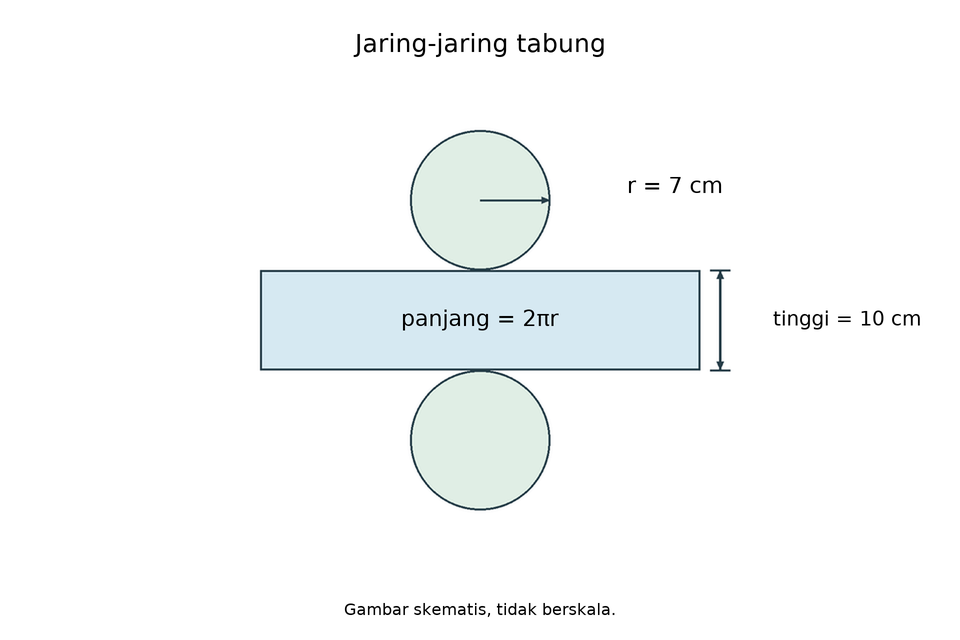
Sebuah jaring-jaring tabung terdiri dari dua lingkaran dan satu persegi panjang.
Jika panjang jari-jari alas tabung tersebut adalah 7 cm dan tingginya 10 cm, maka luas seluruh permukaan tabung yang dibentuk dari jaring-jaring tersebut adalah... (Gunakan $π=\frac{22}{7}$)
- 440 cm²
- 594 cm²
- 616 cm²
- 748 cm²
Kunci D dan pembahasan
Pembahasan:
Luas seluruh permukaan tabung = Luas 2 lingkaran + Luas persegi panjang (selimut).
Luas 2 lingkaran = $2×π×{r}^{2}=2×\frac{22}{7}×7×7=308c{m}^{2}$.
Luas persegi panjang = Keliling alas $×$ tinggi = $(2×\frac{22}{7}×7)×10=44×10=440c{m}^{2}$.
Luas total = $308+440=748c{m}^{2}$.pg-16-4-1:k1

Sebuah jaring-jaring tabung terdiri dari dua lingkaran dan satu persegi panjang.
Jika panjang jari-jari alas tabung tersebut adalah 14 cm dan tingginya 20 cm, maka luas seluruh permukaan tabung yang dibentuk dari jaring-jaring tersebut adalah... (Gunakan $π=\frac{22}{7}$)
- 1.760 cm²
- 2.376 cm²
- 2.464 cm²
- 2.992 cm²
Kunci D dan pembahasan
Hasil = 2.992. Luas dua alas=1.232, selimut=1.760. Total2.992cm2; opsi D.
Jawaban: D. 2.992 cm²
pg-16-4-1:k2

Sebuah jaring-jaring tabung terdiri dari dua lingkaran dan satu persegi panjang.
Jika panjang jari-jari alas tabung tersebut adalah 21 cm dan tingginya 30 cm, maka luas seluruh permukaan tabung yang dibentuk dari jaring-jaring tersebut adalah... (Gunakan $π=\frac{22}{7}$)
- 3.960 cm²
- 5.346 cm²
- 5.544 cm²
- 6.732 cm²
Kunci D dan pembahasan
Hasil = 6.732. Luas dua alas=2.772, selimut=3.960. Total6.732cm2; opsi D.
Jawaban: D. 6.732 cm²
pg-16-4-1:k3

Sebuah jaring-jaring tabung terdiri dari dua lingkaran dan satu persegi panjang.
Jika panjang jari-jari alas tabung tersebut adalah 28 cm dan tingginya 40 cm, maka luas seluruh permukaan tabung yang dibentuk dari jaring-jaring tersebut adalah... (Gunakan $π=\frac{22}{7}$)
- 7.040 cm²
- 9.504 cm²
- 9.856 cm²
- 11.968 cm²
Kunci D dan pembahasan
Hasil = 11.968. Luas dua alas=4.928, selimut=7.040. Total11.968cm2; opsi D.
Jawaban: D. 11.968 cm²
pg-16-4-1:k4
Sebuah jaring-jaring tabung terdiri dari dua lingkaran dan satu persegi panjang.
Jika panjang jari-jari alas tabung tersebut adalah 35 cm dan tingginya 50 cm, maka luas seluruh permukaan tabung yang dibentuk dari jaring-jaring tersebut adalah... (Gunakan $π=\frac{22}{7}$)
- 11.000 cm²
- 14.850 cm²
- 15.400 cm²
- 18.700 cm²
Kunci D dan pembahasan
Hasil = 18.700. Luas dua alas=7.700, selimut=11.000. Total18.700cm2; opsi D.
Jawaban: D. 18.700 cm²
pg-16-4-1:k5
Sebuah jaring-jaring tabung terdiri dari dua lingkaran dan satu persegi panjang.
Jika panjang jari-jari alas tabung tersebut adalah 42 cm dan tingginya 60 cm, maka luas seluruh permukaan tabung yang dibentuk dari jaring-jaring tersebut adalah... (Gunakan $π=\frac{22}{7}$)
- 15.840 cm²
- 21.384 cm²
- 22.176 cm²
- 26.928 cm²
Kunci D dan pembahasan
Hasil = 26.928. Luas dua alas=11.088, selimut=15.840. Total26.928cm2; opsi D.
Jawaban: D. 26.928 cm²
pg-16-4-1:k6
Sebuah jaring-jaring tabung terdiri dari dua lingkaran dan satu persegi panjang.
Jika panjang jari-jari alas tabung tersebut adalah 49 cm dan tingginya 70 cm, maka luas seluruh permukaan tabung yang dibentuk dari jaring-jaring tersebut adalah... (Gunakan $π=\frac{22}{7}$)
- 21.560 cm²
- 29.106 cm²
- 30.184 cm²
- 36.652 cm²
Kunci D dan pembahasan
Hasil = 36.652. Luas dua alas=15.092, selimut=21.560. Total36.652cm2; opsi D.
Jawaban: D. 36.652 cm²
pg-16-4-1:k7
Sebuah jaring-jaring tabung terdiri dari dua lingkaran dan satu persegi panjang.
Jika panjang jari-jari alas tabung tersebut adalah 56 cm dan tingginya 80 cm, maka luas seluruh permukaan tabung yang dibentuk dari jaring-jaring tersebut adalah... (Gunakan $π=\frac{22}{7}$)
- 28.160 cm²
- 38.016 cm²
- 39.424 cm²
- 47.872 cm²
Kunci D dan pembahasan
Hasil = 47.872. Luas dua alas=19.712, selimut=28.160. Total47.872cm2; opsi D.
Jawaban: D. 47.872 cm²
pg-16-4-1:k8
Sebuah jaring-jaring tabung terdiri dari dua lingkaran dan satu persegi panjang.
Jika panjang jari-jari alas tabung tersebut adalah 63 cm dan tingginya 90 cm, maka luas seluruh permukaan tabung yang dibentuk dari jaring-jaring tersebut adalah... (Gunakan $π=\frac{22}{7}$)
- 35.640 cm²
- 48.114 cm²
- 49.896 cm²
- 60.588 cm²
Kunci D dan pembahasan
Hasil = 60.588. Luas dua alas=24.948, selimut=35.640. Total60.588cm2; opsi D.
Jawaban: D. 60.588 cm²
pg-16-4-1:k9
Sebuah jaring-jaring tabung terdiri dari dua lingkaran dan satu persegi panjang.
Jika panjang jari-jari alas tabung tersebut adalah 70 cm dan tingginya 100 cm, maka luas seluruh permukaan tabung yang dibentuk dari jaring-jaring tersebut adalah... (Gunakan $π=\frac{22}{7}$)
- 44.000 cm²
- 59.400 cm²
- 61.600 cm²
- 74.800 cm²
Kunci D dan pembahasan
Hasil = 74.800. Luas dua alas=30.800, selimut=44.000. Total74.800cm2; opsi D.
Jawaban: D. 74.800 cm²
pg-16-4-1:k10
Sebuah jaring-jaring tabung terdiri dari dua lingkaran dan satu persegi panjang.
Jika panjang jari-jari alas tabung tersebut adalah 77 cm dan tingginya 110 cm, maka luas seluruh permukaan tabung yang dibentuk dari jaring-jaring tersebut adalah... (Gunakan $π=\frac{22}{7}$)
- 53.240 cm²
- 71.874 cm²
- 74.536 cm²
- 90.508 cm²
Kunci D dan pembahasan
Hasil = 90.508. Luas dua alas=37.268, selimut=53.240. Total90.508cm2; opsi D.
Jawaban: D. 90.508 cm²
pg-16-4-1:k11
Sebuah jaring-jaring tabung terdiri dari dua lingkaran dan satu persegi panjang.
Jika panjang jari-jari alas tabung tersebut adalah 84 cm dan tingginya 120 cm, maka luas seluruh permukaan tabung yang dibentuk dari jaring-jaring tersebut adalah... (Gunakan $π=\frac{22}{7}$)
- 63.360 cm²
- 85.536 cm²
- 88.704 cm²
- 107.712 cm²
Kunci D dan pembahasan
Hasil = 107.712. Luas dua alas=44.352, selimut=63.360. Total107.712cm2; opsi D.
Jawaban: D. 107.712 cm²
pg-16-4-1:k12

Sebuah jaring-jaring tabung terdiri dari dua lingkaran dan satu persegi panjang.
Jika panjang jari-jari alas tabung tersebut adalah 91 cm dan tingginya 130 cm, maka luas seluruh permukaan tabung yang dibentuk dari jaring-jaring tersebut adalah... (Gunakan $π=\frac{22}{7}$)
- 74.360 cm²
- 100.386 cm²
- 104.104 cm²
- 126.412 cm²
Kunci D dan pembahasan
Hasil = 126.412. Luas dua alas=52.052, selimut=74.360. Total126.412cm2; opsi D.
Jawaban: D. 126.412 cm²
pg-16-4-1:k13

Sebuah jaring-jaring tabung terdiri dari dua lingkaran dan satu persegi panjang.
Jika panjang jari-jari alas tabung tersebut adalah 98 cm dan tingginya 140 cm, maka luas seluruh permukaan tabung yang dibentuk dari jaring-jaring tersebut adalah... (Gunakan $π=\frac{22}{7}$)
- 86.240 cm²
- 116.424 cm²
- 120.736 cm²
- 146.608 cm²
Kunci D dan pembahasan
Hasil = 146.608. Luas dua alas=60.368, selimut=86.240. Total146.608cm2; opsi D.
Jawaban: D. 146.608 cm²
pg-16-4-1:k14
Sebuah jaring-jaring tabung terdiri dari dua lingkaran dan satu persegi panjang.
Jika panjang jari-jari alas tabung tersebut adalah 105 cm dan tingginya 150 cm, maka luas seluruh permukaan tabung yang dibentuk dari jaring-jaring tersebut adalah... (Gunakan $π=\frac{22}{7}$)
- 99.000 cm²
- 133.650 cm²
- 138.600 cm²
- 168.300 cm²
Kunci D dan pembahasan
Hasil = 168.300. Luas dua alas=69.300, selimut=99.000. Total168.300cm2; opsi D.
Jawaban: D. 168.300 cm²
pg-16-4-1:k15
Sebuah jaring-jaring tabung terdiri dari dua lingkaran dan satu persegi panjang.
Jika panjang jari-jari alas tabung tersebut adalah 112 cm dan tingginya 160 cm, maka luas seluruh permukaan tabung yang dibentuk dari jaring-jaring tersebut adalah... (Gunakan $π=\frac{22}{7}$)
- 112.640 cm²
- 152.064 cm²
- 157.696 cm²
- 191.488 cm²
Kunci D dan pembahasan
Hasil = 191.488. Luas dua alas=78.848, selimut=112.640. Total191.488cm2; opsi D.
Jawaban: D. 191.488 cm²
pg-16-4-1:k16
Sebuah jaring-jaring tabung terdiri dari dua lingkaran dan satu persegi panjang.
Jika panjang jari-jari alas tabung tersebut adalah 119 cm dan tingginya 170 cm, maka luas seluruh permukaan tabung yang dibentuk dari jaring-jaring tersebut adalah... (Gunakan $π=\frac{22}{7}$)
- 127.160 cm²
- 171.666 cm²
- 178.024 cm²
- 216.172 cm²
Kunci D dan pembahasan
Hasil = 216.172. Luas dua alas=89.012, selimut=127.160. Total216.172cm2; opsi D.
Jawaban: D. 216.172 cm²
pg-16-4-1:k17
Sebuah jaring-jaring tabung terdiri dari dua lingkaran dan satu persegi panjang.
Jika panjang jari-jari alas tabung tersebut adalah 126 cm dan tingginya 180 cm, maka luas seluruh permukaan tabung yang dibentuk dari jaring-jaring tersebut adalah... (Gunakan $π=\frac{22}{7}$)
- 142.560 cm²
- 192.456 cm²
- 199.584 cm²
- 242.352 cm²
Kunci D dan pembahasan
Hasil = 242.352. Luas dua alas=99.792, selimut=142.560. Total242.352cm2; opsi D.
Jawaban: D. 242.352 cm²
pg-16-4-1:k18
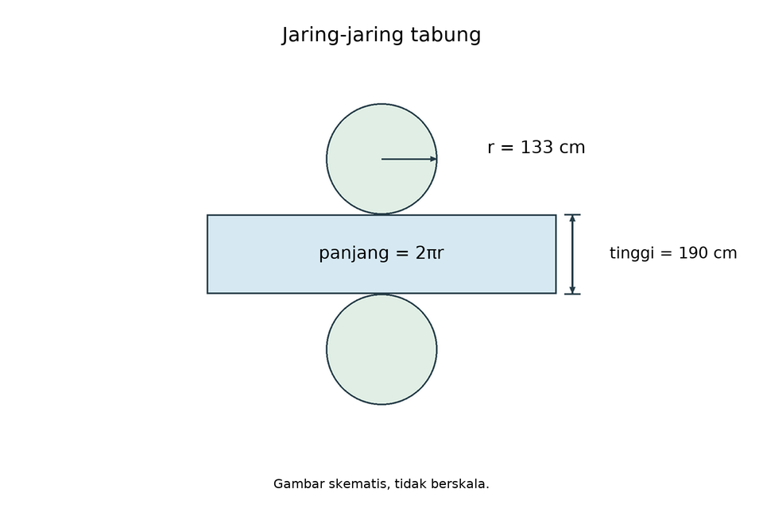
Sebuah jaring-jaring tabung terdiri dari dua lingkaran dan satu persegi panjang.
Jika panjang jari-jari alas tabung tersebut adalah 133 cm dan tingginya 190 cm, maka luas seluruh permukaan tabung yang dibentuk dari jaring-jaring tersebut adalah... (Gunakan $π=\frac{22}{7}$)
- 158.840 cm²
- 214.434 cm²
- 222.376 cm²
- 270.028 cm²
Kunci D dan pembahasan
Hasil = 270.028. Luas dua alas=111.188, selimut=158.840. Total270.028cm2; opsi D.
Jawaban: D. 270.028 cm²
pg-16-4-1:k19

Sebuah jaring-jaring tabung terdiri dari dua lingkaran dan satu persegi panjang.
Jika panjang jari-jari alas tabung tersebut adalah 140 cm dan tingginya 200 cm, maka luas seluruh permukaan tabung yang dibentuk dari jaring-jaring tersebut adalah... (Gunakan $π=\frac{22}{7}$)
- 176.000 cm²
- 237.600 cm²
- 246.400 cm²
- 299.200 cm²
Kunci D dan pembahasan
Hasil = 299.200. Luas dua alas=123.200, selimut=176.000. Total299.200cm2; opsi D.
Jawaban: D. 299.200 cm²
pg-16-4-1:k20
Sebuah jaring-jaring tabung terdiri dari dua lingkaran dan satu persegi panjang.
Jika panjang jari-jari alas tabung tersebut adalah 147 cm dan tingginya 210 cm, maka luas seluruh permukaan tabung yang dibentuk dari jaring-jaring tersebut adalah... (Gunakan $π=\frac{22}{7}$)
- 194.040 cm²
- 261.954 cm²
- 271.656 cm²
- 329.868 cm²
Kunci D dan pembahasan
Hasil = 329.868. Luas dua alas=135.828, selimut=194.040. Total329.868cm2; opsi D.
Jawaban: D. 329.868 cm²
pg-16-4-1:k21
Sebuah jaring-jaring tabung terdiri dari dua lingkaran dan satu persegi panjang.
Jika panjang jari-jari alas tabung tersebut adalah 154 cm dan tingginya 220 cm, maka luas seluruh permukaan tabung yang dibentuk dari jaring-jaring tersebut adalah... (Gunakan $π=\frac{22}{7}$)
- 212.960 cm²
- 287.496 cm²
- 298.144 cm²
- 362.032 cm²
Kunci D dan pembahasan
Hasil = 362.032. Luas dua alas=149.072, selimut=212.960. Total362.032cm2; opsi D.
Jawaban: D. 362.032 cm²
pg-16-4-1:k22
Sebuah jaring-jaring tabung terdiri dari dua lingkaran dan satu persegi panjang.
Jika panjang jari-jari alas tabung tersebut adalah 161 cm dan tingginya 230 cm, maka luas seluruh permukaan tabung yang dibentuk dari jaring-jaring tersebut adalah... (Gunakan $π=\frac{22}{7}$)
- 232.760 cm²
- 314.226 cm²
- 325.864 cm²
- 395.692 cm²
Kunci D dan pembahasan
Hasil = 395.692. Luas dua alas=162.932, selimut=232.760. Total395.692cm2; opsi D.
Jawaban: D. 395.692 cm²
pg-16-4-1:k23
Sebuah jaring-jaring tabung terdiri dari dua lingkaran dan satu persegi panjang.
Jika panjang jari-jari alas tabung tersebut adalah 168 cm dan tingginya 240 cm, maka luas seluruh permukaan tabung yang dibentuk dari jaring-jaring tersebut adalah... (Gunakan $π=\frac{22}{7}$)
- 253.440 cm²
- 342.144 cm²
- 354.816 cm²
- 430.848 cm²
Kunci D dan pembahasan
Hasil = 430.848. Luas dua alas=177.408, selimut=253.440. Total430.848cm2; opsi D.
Jawaban: D. 430.848 cm²
pg-16-4-1:k24

Sebuah jaring-jaring tabung terdiri dari dua lingkaran dan satu persegi panjang.
Jika panjang jari-jari alas tabung tersebut adalah 175 cm dan tingginya 250 cm, maka luas seluruh permukaan tabung yang dibentuk dari jaring-jaring tersebut adalah... (Gunakan $π=\frac{22}{7}$)
- 275.000 cm²
- 371.250 cm²
- 385.000 cm²
- 467.500 cm²
Kunci D dan pembahasan
Hasil = 467.500. Luas dua alas=192.500, selimut=275.000. Total467.500cm2; opsi D.
Jawaban: D. 467.500 cm²
pg-16-4-1:k25
Sebuah jaring-jaring tabung terdiri dari dua lingkaran dan satu persegi panjang.
Jika panjang jari-jari alas tabung tersebut adalah 182 cm dan tingginya 260 cm, maka luas seluruh permukaan tabung yang dibentuk dari jaring-jaring tersebut adalah... (Gunakan $π=\frac{22}{7}$)
- 297.440 cm²
- 401.544 cm²
- 416.416 cm²
- 505.648 cm²
Kunci D dan pembahasan
Hasil = 505.648. Luas dua alas=208.208, selimut=297.440. Total505.648cm2; opsi D.
Jawaban: D. 505.648 cm²
pg-16-4-1:k26
Sebuah jaring-jaring tabung terdiri dari dua lingkaran dan satu persegi panjang.
Jika panjang jari-jari alas tabung tersebut adalah 189 cm dan tingginya 270 cm, maka luas seluruh permukaan tabung yang dibentuk dari jaring-jaring tersebut adalah... (Gunakan $π=\frac{22}{7}$)
- 320.760 cm²
- 433.026 cm²
- 449.064 cm²
- 545.292 cm²
Kunci D dan pembahasan
Hasil = 545.292. Luas dua alas=224.532, selimut=320.760. Total545.292cm2; opsi D.
Jawaban: D. 545.292 cm²
pg-16-4-1:k27
Sebuah jaring-jaring tabung terdiri dari dua lingkaran dan satu persegi panjang.
Jika panjang jari-jari alas tabung tersebut adalah 196 cm dan tingginya 280 cm, maka luas seluruh permukaan tabung yang dibentuk dari jaring-jaring tersebut adalah... (Gunakan $π=\frac{22}{7}$)
- 344.960 cm²
- 465.696 cm²
- 482.944 cm²
- 586.432 cm²
Kunci D dan pembahasan
Hasil = 586.432. Luas dua alas=241.472, selimut=344.960. Total586.432cm2; opsi D.
Jawaban: D. 586.432 cm²
pg-16-4-1:k28

Sebuah jaring-jaring tabung terdiri dari dua lingkaran dan satu persegi panjang.
Jika panjang jari-jari alas tabung tersebut adalah 203 cm dan tingginya 290 cm, maka luas seluruh permukaan tabung yang dibentuk dari jaring-jaring tersebut adalah... (Gunakan $π=\frac{22}{7}$)
- 370.040 cm²
- 499.554 cm²
- 518.056 cm²
- 629.068 cm²
Kunci D dan pembahasan
Hasil = 629.068. Luas dua alas=259.028, selimut=370.040. Total629.068cm2; opsi D.
Jawaban: D. 629.068 cm²
pg-16-4-1:k29
Sebuah jaring-jaring tabung terdiri dari dua lingkaran dan satu persegi panjang.
Jika panjang jari-jari alas tabung tersebut adalah 210 cm dan tingginya 300 cm, maka luas seluruh permukaan tabung yang dibentuk dari jaring-jaring tersebut adalah... (Gunakan $π=\frac{22}{7}$)
- 396.000 cm²
- 534.600 cm²
- 554.400 cm²
- 673.200 cm²
Kunci D dan pembahasan
Hasil = 673.200. Luas dua alas=277.200, selimut=396.000. Total673.200cm2; opsi D.
Jawaban: D. 673.200 cm²
pg-16-4-1:k30
Sebuah jaring-jaring tabung terdiri dari dua lingkaran dan satu persegi panjang.
Jika panjang jari-jari alas tabung tersebut adalah 217 cm dan tingginya 310 cm, maka luas seluruh permukaan tabung yang dibentuk dari jaring-jaring tersebut adalah... (Gunakan $π=\frac{22}{7}$)
- 422.840 cm²
- 570.834 cm²
- 591.976 cm²
- 718.828 cm²
Kunci D dan pembahasan
Hasil = 718.828. Luas dua alas=295.988, selimut=422.840. Total718.828cm2; opsi D.
Jawaban: D. 718.828 cm²
pg-16-4-2:original
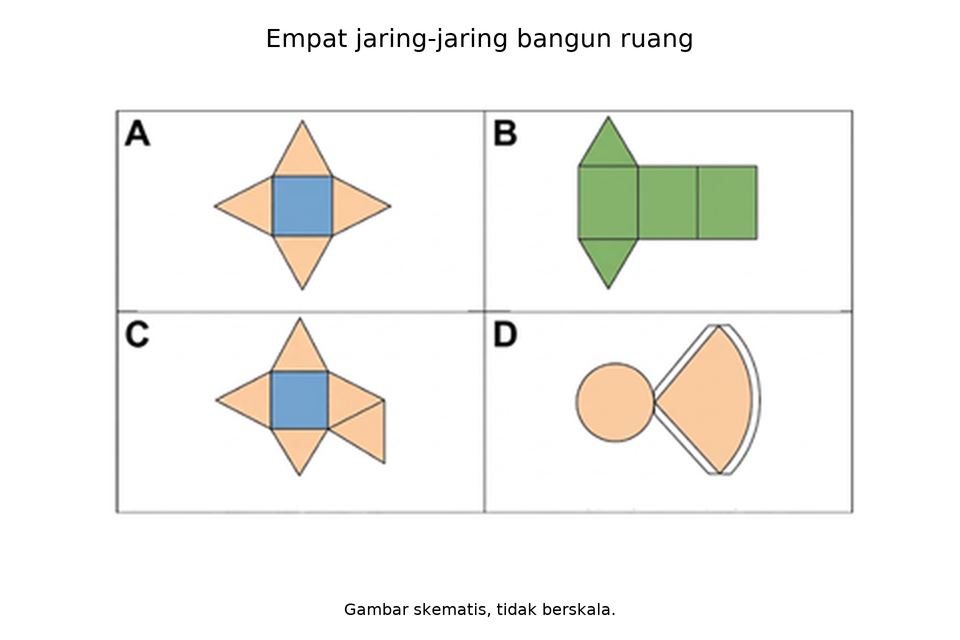
Perhatikan empat gambar jaring-jaring bangun ruang di bawah ini!

Berdasarkan analisis Anda, jaring-jaring manakah yang TIDAK DAPAT dilipat menjadi sebuah bangun ruang yang utuh dan tertutup?
- Jaring-jaring A
- Jaring-jaring B
- Jaring-jaring C
- Jaring-jaring D
Kunci C dan pembahasan
Pembahasan:
Jaring-jaring C merupakan jaring-jaring limas segi empat, namun memiliki 5 buah segitiga sebagai sisi tegak. Limas segi empat hanya membutuhkan 4 buah sisi tegak yang menempel pada 4 sisi persegi alasnya. Jika dilipat, satu sisi tegak akan tumpang tindih (tidak valid).
pg-16-4-2:stock-01
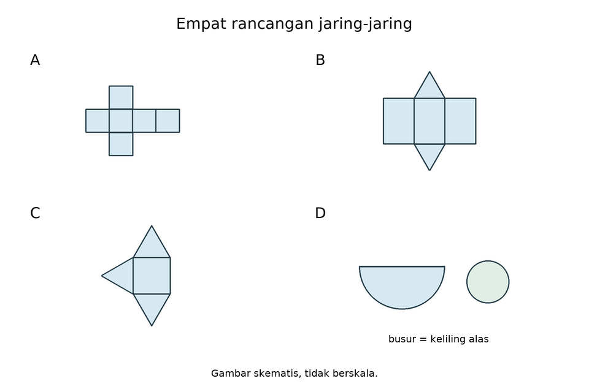
Empat rancangan memiliki sambungan yang sesuai. Rancangan manakah yang kekurangan bidang sehingga tidak membentuk bangun tertutup?
- Kubus: enam persegi kongruen.
- Prisma segitiga: dua segitiga kongruen dan tiga persegi panjang sesuai sisi alas.
- Limas segi empat: satu persegi dan tiga segitiga sisi tegak.
- Kerucut: satu lingkaran dan satu juring dengan busur sepanjang keliling alas.
Kunci C dan pembahasan
Limas segi empat memerlukan empat segitiga sisi tegak; C hanya tiga, sehingga satu sisi terbuka. Komponen A,B,D lengkap dengan sambungan yang disyaratkan.
pg-16-4-2:stock-02
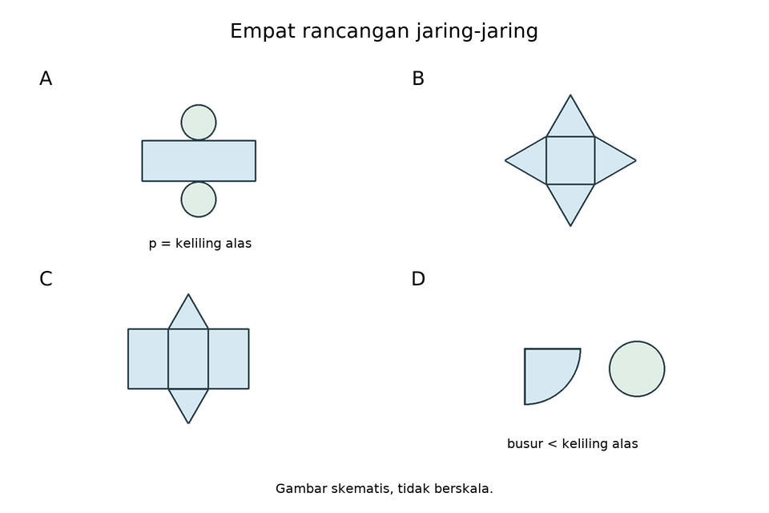
Setiap rancangan mempunyai sambungan yang sesuai. Rancangan manakah yang gagal menutup karena ukuran sambungannya?
- Tabung: dua lingkaran kongruen dan selimut persegi panjang sepanjang keliling alas.
- Limas segi empat: satu persegi dan empat segitiga yang sesuai.
- Prisma segitiga: dua segitiga kongruen dan tiga persegi panjang sesuai sisi alas.
- Kerucut: lingkaran alas dan juring yang panjang busurnya lebih pendek daripada keliling alas.
Kunci D dan pembahasan
D tidak cukup panjang untuk mengelilingi alas; selimut menyisakan celah. A,B,C sudah memenuhi jumlah bidang dan kecocokan sambungan.
pg-16-4-3:original

Sebuah jaring-jaring kerucut terdiri dari sebuah lingkaran dan sebuah juring lingkaran. Jika jari-jari alas kerucut adalah 14 cm dan panjang garis pelukisnya (s) adalah 20 cm, maka panjang busur pada juring lingkaran tersebut adalah… (Gunakan $π=\frac{22}{7}$)
- 44 cm
- 88 cm
- 154 cm
- 176 cm
Kunci B dan pembahasan
Pembahasan:
Pada jaring-jaring kerucut, panjang busur juring lingkaran (selimut) selalu sama dengan keliling lingkaran alas.
Keliling lingkaran = $2×π×r=2×\frac{22}{7}×14=88 cm.$
Jadi, panjang busur juring adalah 88 cm.pg-16-4-3:k1

Sebuah jaring-jaring kerucut terdiri dari sebuah lingkaran dan sebuah juring lingkaran. Jika jari-jari alas kerucut adalah 28 cm dan panjang garis pelukisnya (s) adalah 40 cm, maka panjang busur pada juring lingkaran tersebut adalah… (Gunakan $π=\frac{22}{7}$)
- 88 cm
- 176 cm
- 308 cm
- 352 cm
Kunci B dan pembahasan
Hasil = 176. Busur juring=keliling alas=2*pi*r=176cm; opsi B. Garis pelukis tetap lebih besar daripada r.
Jawaban: B. 176 cm
pg-16-4-3:k2

Sebuah jaring-jaring kerucut terdiri dari sebuah lingkaran dan sebuah juring lingkaran. Jika jari-jari alas kerucut adalah 42 cm dan panjang garis pelukisnya (s) adalah 60 cm, maka panjang busur pada juring lingkaran tersebut adalah… (Gunakan $π=\frac{22}{7}$)
- 132 cm
- 264 cm
- 462 cm
- 528 cm
Kunci B dan pembahasan
Hasil = 264. Busur juring=keliling alas=2*pi*r=264cm; opsi B. Garis pelukis tetap lebih besar daripada r.
Jawaban: B. 264 cm
pg-16-4-3:k3
Sebuah jaring-jaring kerucut terdiri dari sebuah lingkaran dan sebuah juring lingkaran. Jika jari-jari alas kerucut adalah 56 cm dan panjang garis pelukisnya (s) adalah 80 cm, maka panjang busur pada juring lingkaran tersebut adalah… (Gunakan $π=\frac{22}{7}$)
- 176 cm
- 352 cm
- 616 cm
- 704 cm
Kunci B dan pembahasan
Hasil = 352. Busur juring=keliling alas=2*pi*r=352cm; opsi B. Garis pelukis tetap lebih besar daripada r.
Jawaban: B. 352 cm
pg-16-4-3:k4

Sebuah jaring-jaring kerucut terdiri dari sebuah lingkaran dan sebuah juring lingkaran. Jika jari-jari alas kerucut adalah 70 cm dan panjang garis pelukisnya (s) adalah 100 cm, maka panjang busur pada juring lingkaran tersebut adalah… (Gunakan $π=\frac{22}{7}$)
- 220 cm
- 440 cm
- 770 cm
- 880 cm
Kunci B dan pembahasan
Hasil = 440. Busur juring=keliling alas=2*pi*r=440cm; opsi B. Garis pelukis tetap lebih besar daripada r.
Jawaban: B. 440 cm
pg-16-4-3:k5
Sebuah jaring-jaring kerucut terdiri dari sebuah lingkaran dan sebuah juring lingkaran. Jika jari-jari alas kerucut adalah 84 cm dan panjang garis pelukisnya (s) adalah 120 cm, maka panjang busur pada juring lingkaran tersebut adalah… (Gunakan $π=\frac{22}{7}$)
- 264 cm
- 528 cm
- 924 cm
- 1.056 cm
Kunci B dan pembahasan
Hasil = 528. Busur juring=keliling alas=2*pi*r=528cm; opsi B. Garis pelukis tetap lebih besar daripada r.
Jawaban: B. 528 cm
pg-16-4-3:k6

Sebuah jaring-jaring kerucut terdiri dari sebuah lingkaran dan sebuah juring lingkaran. Jika jari-jari alas kerucut adalah 98 cm dan panjang garis pelukisnya (s) adalah 140 cm, maka panjang busur pada juring lingkaran tersebut adalah… (Gunakan $π=\frac{22}{7}$)
- 308 cm
- 616 cm
- 1.078 cm
- 1.232 cm
Kunci B dan pembahasan
Hasil = 616. Busur juring=keliling alas=2*pi*r=616cm; opsi B. Garis pelukis tetap lebih besar daripada r.
Jawaban: B. 616 cm
pg-16-4-3:k7
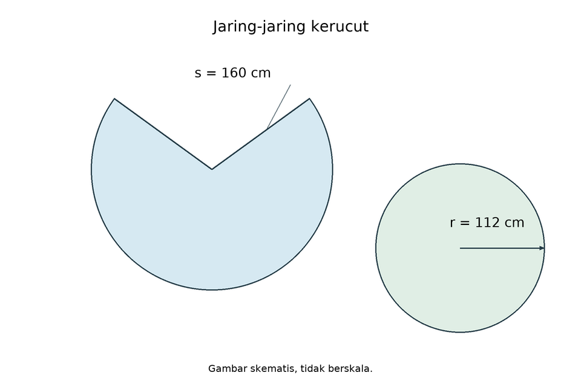
Sebuah jaring-jaring kerucut terdiri dari sebuah lingkaran dan sebuah juring lingkaran. Jika jari-jari alas kerucut adalah 112 cm dan panjang garis pelukisnya (s) adalah 160 cm, maka panjang busur pada juring lingkaran tersebut adalah… (Gunakan $π=\frac{22}{7}$)
- 352 cm
- 704 cm
- 1.232 cm
- 1.408 cm
Kunci B dan pembahasan
Hasil = 704. Busur juring=keliling alas=2*pi*r=704cm; opsi B. Garis pelukis tetap lebih besar daripada r.
Jawaban: B. 704 cm
pg-16-4-3:k8

Sebuah jaring-jaring kerucut terdiri dari sebuah lingkaran dan sebuah juring lingkaran. Jika jari-jari alas kerucut adalah 126 cm dan panjang garis pelukisnya (s) adalah 180 cm, maka panjang busur pada juring lingkaran tersebut adalah… (Gunakan $π=\frac{22}{7}$)
- 396 cm
- 792 cm
- 1.386 cm
- 1.584 cm
Kunci B dan pembahasan
Hasil = 792. Busur juring=keliling alas=2*pi*r=792cm; opsi B. Garis pelukis tetap lebih besar daripada r.
Jawaban: B. 792 cm
pg-16-4-3:k9

Sebuah jaring-jaring kerucut terdiri dari sebuah lingkaran dan sebuah juring lingkaran. Jika jari-jari alas kerucut adalah 140 cm dan panjang garis pelukisnya (s) adalah 200 cm, maka panjang busur pada juring lingkaran tersebut adalah… (Gunakan $π=\frac{22}{7}$)
- 440 cm
- 880 cm
- 1.540 cm
- 1.760 cm
Kunci B dan pembahasan
Hasil = 880. Busur juring=keliling alas=2*pi*r=880cm; opsi B. Garis pelukis tetap lebih besar daripada r.
Jawaban: B. 880 cm
pg-16-4-3:k10
Sebuah jaring-jaring kerucut terdiri dari sebuah lingkaran dan sebuah juring lingkaran. Jika jari-jari alas kerucut adalah 154 cm dan panjang garis pelukisnya (s) adalah 220 cm, maka panjang busur pada juring lingkaran tersebut adalah… (Gunakan $π=\frac{22}{7}$)
- 484 cm
- 968 cm
- 1.694 cm
- 1.936 cm
Kunci B dan pembahasan
Hasil = 968. Busur juring=keliling alas=2*pi*r=968cm; opsi B. Garis pelukis tetap lebih besar daripada r.
Jawaban: B. 968 cm
pg-16-4-3:k11
Sebuah jaring-jaring kerucut terdiri dari sebuah lingkaran dan sebuah juring lingkaran. Jika jari-jari alas kerucut adalah 168 cm dan panjang garis pelukisnya (s) adalah 240 cm, maka panjang busur pada juring lingkaran tersebut adalah… (Gunakan $π=\frac{22}{7}$)
- 528 cm
- 1.056 cm
- 1.848 cm
- 2.112 cm
Kunci B dan pembahasan
Hasil = 1.056. Busur juring=keliling alas=2*pi*r=1.056cm; opsi B. Garis pelukis tetap lebih besar daripada r.
Jawaban: B. 1.056 cm
pg-16-4-3:k12

Sebuah jaring-jaring kerucut terdiri dari sebuah lingkaran dan sebuah juring lingkaran. Jika jari-jari alas kerucut adalah 182 cm dan panjang garis pelukisnya (s) adalah 260 cm, maka panjang busur pada juring lingkaran tersebut adalah… (Gunakan $π=\frac{22}{7}$)
- 572 cm
- 1.144 cm
- 2.002 cm
- 2.288 cm
Kunci B dan pembahasan
Hasil = 1.144. Busur juring=keliling alas=2*pi*r=1.144cm; opsi B. Garis pelukis tetap lebih besar daripada r.
Jawaban: B. 1.144 cm
pg-16-4-3:k13

Sebuah jaring-jaring kerucut terdiri dari sebuah lingkaran dan sebuah juring lingkaran. Jika jari-jari alas kerucut adalah 196 cm dan panjang garis pelukisnya (s) adalah 280 cm, maka panjang busur pada juring lingkaran tersebut adalah… (Gunakan $π=\frac{22}{7}$)
- 616 cm
- 1.232 cm
- 2.156 cm
- 2.464 cm
Kunci B dan pembahasan
Hasil = 1.232. Busur juring=keliling alas=2*pi*r=1.232cm; opsi B. Garis pelukis tetap lebih besar daripada r.
Jawaban: B. 1.232 cm
pg-16-4-3:k14

Sebuah jaring-jaring kerucut terdiri dari sebuah lingkaran dan sebuah juring lingkaran. Jika jari-jari alas kerucut adalah 210 cm dan panjang garis pelukisnya (s) adalah 300 cm, maka panjang busur pada juring lingkaran tersebut adalah… (Gunakan $π=\frac{22}{7}$)
- 660 cm
- 1.320 cm
- 2.310 cm
- 2.640 cm
Kunci B dan pembahasan
Hasil = 1.320. Busur juring=keliling alas=2*pi*r=1.320cm; opsi B. Garis pelukis tetap lebih besar daripada r.
Jawaban: B. 1.320 cm
pg-16-4-3:k15
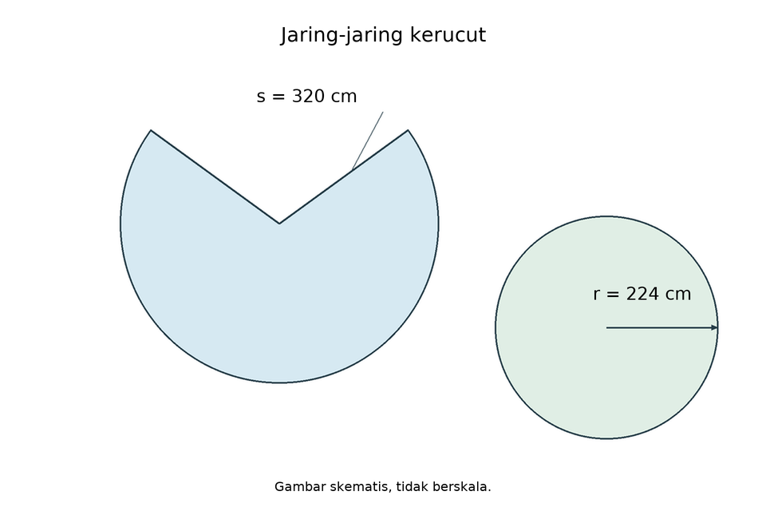
Sebuah jaring-jaring kerucut terdiri dari sebuah lingkaran dan sebuah juring lingkaran. Jika jari-jari alas kerucut adalah 224 cm dan panjang garis pelukisnya (s) adalah 320 cm, maka panjang busur pada juring lingkaran tersebut adalah… (Gunakan $π=\frac{22}{7}$)
- 704 cm
- 1.408 cm
- 2.464 cm
- 2.816 cm
Kunci B dan pembahasan
Hasil = 1.408. Busur juring=keliling alas=2*pi*r=1.408cm; opsi B. Garis pelukis tetap lebih besar daripada r.
Jawaban: B. 1.408 cm
pg-16-4-3:k16
Sebuah jaring-jaring kerucut terdiri dari sebuah lingkaran dan sebuah juring lingkaran. Jika jari-jari alas kerucut adalah 238 cm dan panjang garis pelukisnya (s) adalah 340 cm, maka panjang busur pada juring lingkaran tersebut adalah… (Gunakan $π=\frac{22}{7}$)
- 748 cm
- 1.496 cm
- 2.618 cm
- 2.992 cm
Kunci B dan pembahasan
Hasil = 1.496. Busur juring=keliling alas=2*pi*r=1.496cm; opsi B. Garis pelukis tetap lebih besar daripada r.
Jawaban: B. 1.496 cm
pg-16-4-3:k17

Sebuah jaring-jaring kerucut terdiri dari sebuah lingkaran dan sebuah juring lingkaran. Jika jari-jari alas kerucut adalah 252 cm dan panjang garis pelukisnya (s) adalah 360 cm, maka panjang busur pada juring lingkaran tersebut adalah… (Gunakan $π=\frac{22}{7}$)
- 792 cm
- 1.584 cm
- 2.772 cm
- 3.168 cm
Kunci B dan pembahasan
Hasil = 1.584. Busur juring=keliling alas=2*pi*r=1.584cm; opsi B. Garis pelukis tetap lebih besar daripada r.
Jawaban: B. 1.584 cm
pg-16-4-3:k18

Sebuah jaring-jaring kerucut terdiri dari sebuah lingkaran dan sebuah juring lingkaran. Jika jari-jari alas kerucut adalah 266 cm dan panjang garis pelukisnya (s) adalah 380 cm, maka panjang busur pada juring lingkaran tersebut adalah… (Gunakan $π=\frac{22}{7}$)
- 836 cm
- 1.672 cm
- 2.926 cm
- 3.344 cm
Kunci B dan pembahasan
Hasil = 1.672. Busur juring=keliling alas=2*pi*r=1.672cm; opsi B. Garis pelukis tetap lebih besar daripada r.
Jawaban: B. 1.672 cm
pg-16-4-3:k19

Sebuah jaring-jaring kerucut terdiri dari sebuah lingkaran dan sebuah juring lingkaran. Jika jari-jari alas kerucut adalah 280 cm dan panjang garis pelukisnya (s) adalah 400 cm, maka panjang busur pada juring lingkaran tersebut adalah… (Gunakan $π=\frac{22}{7}$)
- 880 cm
- 1.760 cm
- 3.080 cm
- 3.520 cm
Kunci B dan pembahasan
Hasil = 1.760. Busur juring=keliling alas=2*pi*r=1.760cm; opsi B. Garis pelukis tetap lebih besar daripada r.
Jawaban: B. 1.760 cm
pg-16-4-3:k20

Sebuah jaring-jaring kerucut terdiri dari sebuah lingkaran dan sebuah juring lingkaran. Jika jari-jari alas kerucut adalah 294 cm dan panjang garis pelukisnya (s) adalah 420 cm, maka panjang busur pada juring lingkaran tersebut adalah… (Gunakan $π=\frac{22}{7}$)
- 924 cm
- 1.848 cm
- 3.234 cm
- 3.696 cm
Kunci B dan pembahasan
Hasil = 1.848. Busur juring=keliling alas=2*pi*r=1.848cm; opsi B. Garis pelukis tetap lebih besar daripada r.
Jawaban: B. 1.848 cm
pg-16-4-3:k21
Sebuah jaring-jaring kerucut terdiri dari sebuah lingkaran dan sebuah juring lingkaran. Jika jari-jari alas kerucut adalah 308 cm dan panjang garis pelukisnya (s) adalah 440 cm, maka panjang busur pada juring lingkaran tersebut adalah… (Gunakan $π=\frac{22}{7}$)
- 968 cm
- 1.936 cm
- 3.388 cm
- 3.872 cm
Kunci B dan pembahasan
Hasil = 1.936. Busur juring=keliling alas=2*pi*r=1.936cm; opsi B. Garis pelukis tetap lebih besar daripada r.
Jawaban: B. 1.936 cm
pg-16-4-3:k22
Sebuah jaring-jaring kerucut terdiri dari sebuah lingkaran dan sebuah juring lingkaran. Jika jari-jari alas kerucut adalah 322 cm dan panjang garis pelukisnya (s) adalah 460 cm, maka panjang busur pada juring lingkaran tersebut adalah… (Gunakan $π=\frac{22}{7}$)
- 1.012 cm
- 2.024 cm
- 3.542 cm
- 4.048 cm
Kunci B dan pembahasan
Hasil = 2.024. Busur juring=keliling alas=2*pi*r=2.024cm; opsi B. Garis pelukis tetap lebih besar daripada r.
Jawaban: B. 2.024 cm
pg-16-4-3:k23

Sebuah jaring-jaring kerucut terdiri dari sebuah lingkaran dan sebuah juring lingkaran. Jika jari-jari alas kerucut adalah 336 cm dan panjang garis pelukisnya (s) adalah 480 cm, maka panjang busur pada juring lingkaran tersebut adalah… (Gunakan $π=\frac{22}{7}$)
- 1.056 cm
- 2.112 cm
- 3.696 cm
- 4.224 cm
Kunci B dan pembahasan
Hasil = 2.112. Busur juring=keliling alas=2*pi*r=2.112cm; opsi B. Garis pelukis tetap lebih besar daripada r.
Jawaban: B. 2.112 cm
pg-16-4-3:k24

Sebuah jaring-jaring kerucut terdiri dari sebuah lingkaran dan sebuah juring lingkaran. Jika jari-jari alas kerucut adalah 350 cm dan panjang garis pelukisnya (s) adalah 500 cm, maka panjang busur pada juring lingkaran tersebut adalah… (Gunakan $π=\frac{22}{7}$)
- 1.100 cm
- 2.200 cm
- 3.850 cm
- 4.400 cm
Kunci B dan pembahasan
Hasil = 2.200. Busur juring=keliling alas=2*pi*r=2.200cm; opsi B. Garis pelukis tetap lebih besar daripada r.
Jawaban: B. 2.200 cm
pg-16-4-3:k25

Sebuah jaring-jaring kerucut terdiri dari sebuah lingkaran dan sebuah juring lingkaran. Jika jari-jari alas kerucut adalah 364 cm dan panjang garis pelukisnya (s) adalah 520 cm, maka panjang busur pada juring lingkaran tersebut adalah… (Gunakan $π=\frac{22}{7}$)
- 1.144 cm
- 2.288 cm
- 4.004 cm
- 4.576 cm
Kunci B dan pembahasan
Hasil = 2.288. Busur juring=keliling alas=2*pi*r=2.288cm; opsi B. Garis pelukis tetap lebih besar daripada r.
Jawaban: B. 2.288 cm
pg-16-4-3:k26
Sebuah jaring-jaring kerucut terdiri dari sebuah lingkaran dan sebuah juring lingkaran. Jika jari-jari alas kerucut adalah 378 cm dan panjang garis pelukisnya (s) adalah 540 cm, maka panjang busur pada juring lingkaran tersebut adalah… (Gunakan $π=\frac{22}{7}$)
- 1.188 cm
- 2.376 cm
- 4.158 cm
- 4.752 cm
Kunci B dan pembahasan
Hasil = 2.376. Busur juring=keliling alas=2*pi*r=2.376cm; opsi B. Garis pelukis tetap lebih besar daripada r.
Jawaban: B. 2.376 cm
pg-16-4-3:k27

Sebuah jaring-jaring kerucut terdiri dari sebuah lingkaran dan sebuah juring lingkaran. Jika jari-jari alas kerucut adalah 392 cm dan panjang garis pelukisnya (s) adalah 560 cm, maka panjang busur pada juring lingkaran tersebut adalah… (Gunakan $π=\frac{22}{7}$)
- 1.232 cm
- 2.464 cm
- 4.312 cm
- 4.928 cm
Kunci B dan pembahasan
Hasil = 2.464. Busur juring=keliling alas=2*pi*r=2.464cm; opsi B. Garis pelukis tetap lebih besar daripada r.
Jawaban: B. 2.464 cm
pg-16-4-3:k28
Sebuah jaring-jaring kerucut terdiri dari sebuah lingkaran dan sebuah juring lingkaran. Jika jari-jari alas kerucut adalah 406 cm dan panjang garis pelukisnya (s) adalah 580 cm, maka panjang busur pada juring lingkaran tersebut adalah… (Gunakan $π=\frac{22}{7}$)
- 1.276 cm
- 2.552 cm
- 4.466 cm
- 5.104 cm
Kunci B dan pembahasan
Hasil = 2.552. Busur juring=keliling alas=2*pi*r=2.552cm; opsi B. Garis pelukis tetap lebih besar daripada r.
Jawaban: B. 2.552 cm
pg-16-4-3:k29
Sebuah jaring-jaring kerucut terdiri dari sebuah lingkaran dan sebuah juring lingkaran. Jika jari-jari alas kerucut adalah 420 cm dan panjang garis pelukisnya (s) adalah 600 cm, maka panjang busur pada juring lingkaran tersebut adalah… (Gunakan $π=\frac{22}{7}$)
- 1.320 cm
- 2.640 cm
- 4.620 cm
- 5.280 cm
Kunci B dan pembahasan
Hasil = 2.640. Busur juring=keliling alas=2*pi*r=2.640cm; opsi B. Garis pelukis tetap lebih besar daripada r.
Jawaban: B. 2.640 cm
pg-16-4-3:k30
Sebuah jaring-jaring kerucut terdiri dari sebuah lingkaran dan sebuah juring lingkaran. Jika jari-jari alas kerucut adalah 434 cm dan panjang garis pelukisnya (s) adalah 620 cm, maka panjang busur pada juring lingkaran tersebut adalah… (Gunakan $π=\frac{22}{7}$)
- 1.364 cm
- 2.728 cm
- 4.774 cm
- 5.456 cm
Kunci B dan pembahasan
Hasil = 2.728. Busur juring=keliling alas=2*pi*r=2.728cm; opsi B. Garis pelukis tetap lebih besar daripada r.
Jawaban: B. 2.728 cm
pg-16-4-4:original

Sebuah jaring-jaring limas segi empat beraturan memiliki alas persegi bersisi 12 cm dan empat sisi tegak segitiga yang masing-masing memiliki tinggi 10 cm. Luas permukaan bangun ruang yang terbentuk adalah...
- 144 cm²
- 240 cm²
- 384 cm²
- 480 cm²
Kunci C dan pembahasan
Pembahasan:
Luas permukaan limas = Luas alas + Luas 4 sisi tegak.
Luas alas (persegi) = $12×12=144c{m}^{2}$
Luas 1 sisi tegak (segitiga) = $\frac{1}{2}×12×10=60c{m}^{2}$
Luas 4 sisi tegak = $4×60=240c{m}^{2}$
Luas total = $144+240=384c{m}^{2}$pg-16-4-4:k1
Sebuah jaring-jaring limas segi empat beraturan memiliki alas persegi bersisi 24 cm dan empat sisi tegak segitiga yang masing-masing memiliki tinggi 20 cm. Luas permukaan bangun ruang yang terbentuk adalah...
- 576 cm²
- 960 cm²
- 1.536 cm²
- 1.920 cm²
Kunci C dan pembahasan
Hasil = 1.536. Alas=576, empat segitiga=960. Total1.536, opsi C.
Jawaban: C. 1.536 cm²
pg-16-4-4:k2
Sebuah jaring-jaring limas segi empat beraturan memiliki alas persegi bersisi 36 cm dan empat sisi tegak segitiga yang masing-masing memiliki tinggi 30 cm. Luas permukaan bangun ruang yang terbentuk adalah...
- 1.296 cm²
- 2.160 cm²
- 3.456 cm²
- 4.320 cm²
Kunci C dan pembahasan
Hasil = 3.456. Alas=1.296, empat segitiga=2.160. Total3.456, opsi C.
Jawaban: C. 3.456 cm²
pg-16-4-4:k3

Sebuah jaring-jaring limas segi empat beraturan memiliki alas persegi bersisi 48 cm dan empat sisi tegak segitiga yang masing-masing memiliki tinggi 40 cm. Luas permukaan bangun ruang yang terbentuk adalah...
- 2.304 cm²
- 3.840 cm²
- 6.144 cm²
- 7.680 cm²
Kunci C dan pembahasan
Hasil = 6.144. Alas=2.304, empat segitiga=3.840. Total6.144, opsi C.
Jawaban: C. 6.144 cm²
pg-16-4-4:k4

Sebuah jaring-jaring limas segi empat beraturan memiliki alas persegi bersisi 60 cm dan empat sisi tegak segitiga yang masing-masing memiliki tinggi 50 cm. Luas permukaan bangun ruang yang terbentuk adalah...
- 3.600 cm²
- 6.000 cm²
- 9.600 cm²
- 12.000 cm²
Kunci C dan pembahasan
Hasil = 9.600. Alas=3.600, empat segitiga=6.000. Total9.600, opsi C.
Jawaban: C. 9.600 cm²
pg-16-4-4:k5

Sebuah jaring-jaring limas segi empat beraturan memiliki alas persegi bersisi 72 cm dan empat sisi tegak segitiga yang masing-masing memiliki tinggi 60 cm. Luas permukaan bangun ruang yang terbentuk adalah...
- 5.184 cm²
- 8.640 cm²
- 13.824 cm²
- 17.280 cm²
Kunci C dan pembahasan
Hasil = 13.824. Alas=5.184, empat segitiga=8.640. Total13.824, opsi C.
Jawaban: C. 13.824 cm²
pg-16-4-4:k6
Sebuah jaring-jaring limas segi empat beraturan memiliki alas persegi bersisi 84 cm dan empat sisi tegak segitiga yang masing-masing memiliki tinggi 70 cm. Luas permukaan bangun ruang yang terbentuk adalah...
- 7.056 cm²
- 11.760 cm²
- 18.816 cm²
- 23.520 cm²
Kunci C dan pembahasan
Hasil = 18.816. Alas=7.056, empat segitiga=11.760. Total18.816, opsi C.
Jawaban: C. 18.816 cm²
pg-16-4-4:k7

Sebuah jaring-jaring limas segi empat beraturan memiliki alas persegi bersisi 96 cm dan empat sisi tegak segitiga yang masing-masing memiliki tinggi 80 cm. Luas permukaan bangun ruang yang terbentuk adalah...
- 9.216 cm²
- 15.360 cm²
- 24.576 cm²
- 30.720 cm²
Kunci C dan pembahasan
Hasil = 24.576. Alas=9.216, empat segitiga=15.360. Total24.576, opsi C.
Jawaban: C. 24.576 cm²
pg-16-4-4:k8
Sebuah jaring-jaring limas segi empat beraturan memiliki alas persegi bersisi 108 cm dan empat sisi tegak segitiga yang masing-masing memiliki tinggi 90 cm. Luas permukaan bangun ruang yang terbentuk adalah...
- 11.664 cm²
- 19.440 cm²
- 31.104 cm²
- 38.880 cm²
Kunci C dan pembahasan
Hasil = 31.104. Alas=11.664, empat segitiga=19.440. Total31.104, opsi C.
Jawaban: C. 31.104 cm²
pg-16-4-4:k9
Sebuah jaring-jaring limas segi empat beraturan memiliki alas persegi bersisi 120 cm dan empat sisi tegak segitiga yang masing-masing memiliki tinggi 100 cm. Luas permukaan bangun ruang yang terbentuk adalah...
- 14.400 cm²
- 24.000 cm²
- 38.400 cm²
- 48.000 cm²
Kunci C dan pembahasan
Hasil = 38.400. Alas=14.400, empat segitiga=24.000. Total38.400, opsi C.
Jawaban: C. 38.400 cm²
pg-16-4-4:k10

Sebuah jaring-jaring limas segi empat beraturan memiliki alas persegi bersisi 132 cm dan empat sisi tegak segitiga yang masing-masing memiliki tinggi 110 cm. Luas permukaan bangun ruang yang terbentuk adalah...
- 17.424 cm²
- 29.040 cm²
- 46.464 cm²
- 58.080 cm²
Kunci C dan pembahasan
Hasil = 46.464. Alas=17.424, empat segitiga=29.040. Total46.464, opsi C.
Jawaban: C. 46.464 cm²
pg-16-4-4:k11
Sebuah jaring-jaring limas segi empat beraturan memiliki alas persegi bersisi 144 cm dan empat sisi tegak segitiga yang masing-masing memiliki tinggi 120 cm. Luas permukaan bangun ruang yang terbentuk adalah...
- 20.736 cm²
- 34.560 cm²
- 55.296 cm²
- 69.120 cm²
Kunci C dan pembahasan
Hasil = 55.296. Alas=20.736, empat segitiga=34.560. Total55.296, opsi C.
Jawaban: C. 55.296 cm²
pg-16-4-4:k12
Sebuah jaring-jaring limas segi empat beraturan memiliki alas persegi bersisi 156 cm dan empat sisi tegak segitiga yang masing-masing memiliki tinggi 130 cm. Luas permukaan bangun ruang yang terbentuk adalah...
- 24.336 cm²
- 40.560 cm²
- 64.896 cm²
- 81.120 cm²
Kunci C dan pembahasan
Hasil = 64.896. Alas=24.336, empat segitiga=40.560. Total64.896, opsi C.
Jawaban: C. 64.896 cm²
pg-16-4-4:k13
Sebuah jaring-jaring limas segi empat beraturan memiliki alas persegi bersisi 168 cm dan empat sisi tegak segitiga yang masing-masing memiliki tinggi 140 cm. Luas permukaan bangun ruang yang terbentuk adalah...
- 28.224 cm²
- 47.040 cm²
- 75.264 cm²
- 94.080 cm²
Kunci C dan pembahasan
Hasil = 75.264. Alas=28.224, empat segitiga=47.040. Total75.264, opsi C.
Jawaban: C. 75.264 cm²
pg-16-4-4:k14

Sebuah jaring-jaring limas segi empat beraturan memiliki alas persegi bersisi 180 cm dan empat sisi tegak segitiga yang masing-masing memiliki tinggi 150 cm. Luas permukaan bangun ruang yang terbentuk adalah...
- 32.400 cm²
- 54.000 cm²
- 86.400 cm²
- 108.000 cm²
Kunci C dan pembahasan
Hasil = 86.400. Alas=32.400, empat segitiga=54.000. Total86.400, opsi C.
Jawaban: C. 86.400 cm²
pg-16-4-4:k15
Sebuah jaring-jaring limas segi empat beraturan memiliki alas persegi bersisi 192 cm dan empat sisi tegak segitiga yang masing-masing memiliki tinggi 160 cm. Luas permukaan bangun ruang yang terbentuk adalah...
- 36.864 cm²
- 61.440 cm²
- 98.304 cm²
- 122.880 cm²
Kunci C dan pembahasan
Hasil = 98.304. Alas=36.864, empat segitiga=61.440. Total98.304, opsi C.
Jawaban: C. 98.304 cm²
pg-16-4-4:k16
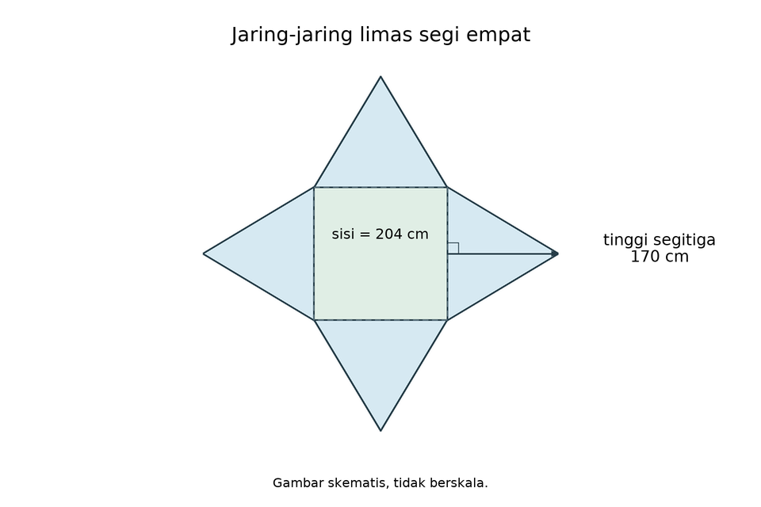
Sebuah jaring-jaring limas segi empat beraturan memiliki alas persegi bersisi 204 cm dan empat sisi tegak segitiga yang masing-masing memiliki tinggi 170 cm. Luas permukaan bangun ruang yang terbentuk adalah...
- 41.616 cm²
- 69.360 cm²
- 110.976 cm²
- 138.720 cm²
Kunci C dan pembahasan
Hasil = 110.976. Alas=41.616, empat segitiga=69.360. Total110.976, opsi C.
Jawaban: C. 110.976 cm²
pg-16-4-4:k17

Sebuah jaring-jaring limas segi empat beraturan memiliki alas persegi bersisi 216 cm dan empat sisi tegak segitiga yang masing-masing memiliki tinggi 180 cm. Luas permukaan bangun ruang yang terbentuk adalah...
- 46.656 cm²
- 77.760 cm²
- 124.416 cm²
- 155.520 cm²
Kunci C dan pembahasan
Hasil = 124.416. Alas=46.656, empat segitiga=77.760. Total124.416, opsi C.
Jawaban: C. 124.416 cm²
pg-16-4-4:k18

Sebuah jaring-jaring limas segi empat beraturan memiliki alas persegi bersisi 228 cm dan empat sisi tegak segitiga yang masing-masing memiliki tinggi 190 cm. Luas permukaan bangun ruang yang terbentuk adalah...
- 51.984 cm²
- 86.640 cm²
- 138.624 cm²
- 173.280 cm²
Kunci C dan pembahasan
Hasil = 138.624. Alas=51.984, empat segitiga=86.640. Total138.624, opsi C.
Jawaban: C. 138.624 cm²
pg-16-4-4:k19

Sebuah jaring-jaring limas segi empat beraturan memiliki alas persegi bersisi 240 cm dan empat sisi tegak segitiga yang masing-masing memiliki tinggi 200 cm. Luas permukaan bangun ruang yang terbentuk adalah...
- 57.600 cm²
- 96.000 cm²
- 153.600 cm²
- 192.000 cm²
Kunci C dan pembahasan
Hasil = 153.600. Alas=57.600, empat segitiga=96.000. Total153.600, opsi C.
Jawaban: C. 153.600 cm²
pg-16-4-4:k20
Sebuah jaring-jaring limas segi empat beraturan memiliki alas persegi bersisi 252 cm dan empat sisi tegak segitiga yang masing-masing memiliki tinggi 210 cm. Luas permukaan bangun ruang yang terbentuk adalah...
- 63.504 cm²
- 105.840 cm²
- 169.344 cm²
- 211.680 cm²
Kunci C dan pembahasan
Hasil = 169.344. Alas=63.504, empat segitiga=105.840. Total169.344, opsi C.
Jawaban: C. 169.344 cm²
pg-16-4-4:k21
Sebuah jaring-jaring limas segi empat beraturan memiliki alas persegi bersisi 264 cm dan empat sisi tegak segitiga yang masing-masing memiliki tinggi 220 cm. Luas permukaan bangun ruang yang terbentuk adalah...
- 69.696 cm²
- 116.160 cm²
- 185.856 cm²
- 232.320 cm²
Kunci C dan pembahasan
Hasil = 185.856. Alas=69.696, empat segitiga=116.160. Total185.856, opsi C.
Jawaban: C. 185.856 cm²
pg-16-4-4:k22
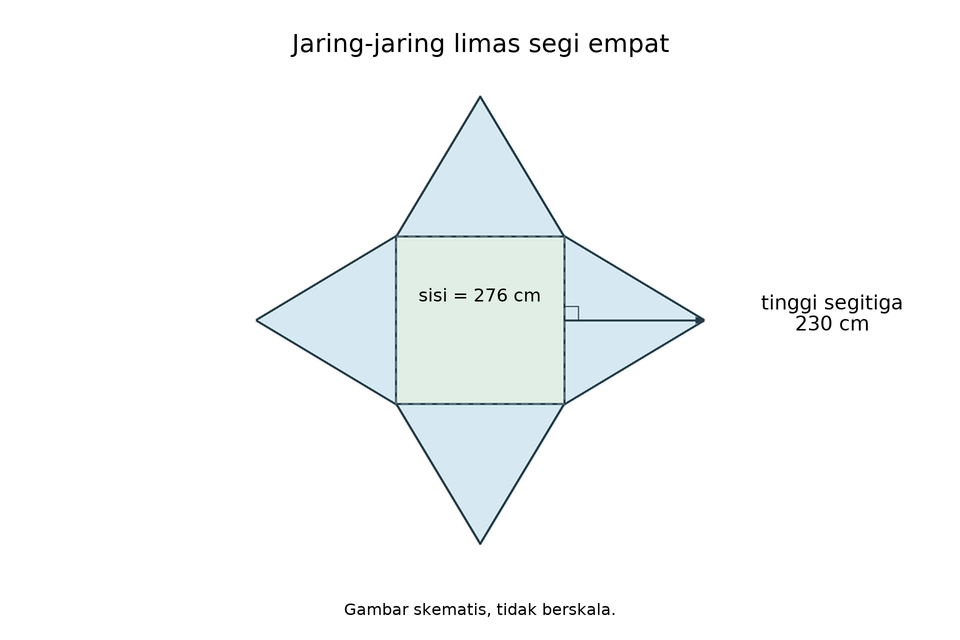
Sebuah jaring-jaring limas segi empat beraturan memiliki alas persegi bersisi 276 cm dan empat sisi tegak segitiga yang masing-masing memiliki tinggi 230 cm. Luas permukaan bangun ruang yang terbentuk adalah...
- 76.176 cm²
- 126.960 cm²
- 203.136 cm²
- 253.920 cm²
Kunci C dan pembahasan
Hasil = 203.136. Alas=76.176, empat segitiga=126.960. Total203.136, opsi C.
Jawaban: C. 203.136 cm²
pg-16-4-4:k23
Sebuah jaring-jaring limas segi empat beraturan memiliki alas persegi bersisi 288 cm dan empat sisi tegak segitiga yang masing-masing memiliki tinggi 240 cm. Luas permukaan bangun ruang yang terbentuk adalah...
- 82.944 cm²
- 138.240 cm²
- 221.184 cm²
- 276.480 cm²
Kunci C dan pembahasan
Hasil = 221.184. Alas=82.944, empat segitiga=138.240. Total221.184, opsi C.
Jawaban: C. 221.184 cm²
pg-16-4-4:k24
Sebuah jaring-jaring limas segi empat beraturan memiliki alas persegi bersisi 300 cm dan empat sisi tegak segitiga yang masing-masing memiliki tinggi 250 cm. Luas permukaan bangun ruang yang terbentuk adalah...
- 90.000 cm²
- 150.000 cm²
- 240.000 cm²
- 300.000 cm²
Kunci C dan pembahasan
Hasil = 240.000. Alas=90.000, empat segitiga=150.000. Total240.000, opsi C.
Jawaban: C. 240.000 cm²
pg-16-4-4:k25
Sebuah jaring-jaring limas segi empat beraturan memiliki alas persegi bersisi 312 cm dan empat sisi tegak segitiga yang masing-masing memiliki tinggi 260 cm. Luas permukaan bangun ruang yang terbentuk adalah...
- 97.344 cm²
- 162.240 cm²
- 259.584 cm²
- 324.480 cm²
Kunci C dan pembahasan
Hasil = 259.584. Alas=97.344, empat segitiga=162.240. Total259.584, opsi C.
Jawaban: C. 259.584 cm²
pg-16-4-4:k26

Sebuah jaring-jaring limas segi empat beraturan memiliki alas persegi bersisi 324 cm dan empat sisi tegak segitiga yang masing-masing memiliki tinggi 270 cm. Luas permukaan bangun ruang yang terbentuk adalah...
- 104.976 cm²
- 174.960 cm²
- 279.936 cm²
- 349.920 cm²
Kunci C dan pembahasan
Hasil = 279.936. Alas=104.976, empat segitiga=174.960. Total279.936, opsi C.
Jawaban: C. 279.936 cm²
pg-16-4-4:k27

Sebuah jaring-jaring limas segi empat beraturan memiliki alas persegi bersisi 336 cm dan empat sisi tegak segitiga yang masing-masing memiliki tinggi 280 cm. Luas permukaan bangun ruang yang terbentuk adalah...
- 112.896 cm²
- 188.160 cm²
- 301.056 cm²
- 376.320 cm²
Kunci C dan pembahasan
Hasil = 301.056. Alas=112.896, empat segitiga=188.160. Total301.056, opsi C.
Jawaban: C. 301.056 cm²
pg-16-4-4:k28

Sebuah jaring-jaring limas segi empat beraturan memiliki alas persegi bersisi 348 cm dan empat sisi tegak segitiga yang masing-masing memiliki tinggi 290 cm. Luas permukaan bangun ruang yang terbentuk adalah...
- 121.104 cm²
- 201.840 cm²
- 322.944 cm²
- 403.680 cm²
Kunci C dan pembahasan
Hasil = 322.944. Alas=121.104, empat segitiga=201.840. Total322.944, opsi C.
Jawaban: C. 322.944 cm²
pg-16-4-4:k29

Sebuah jaring-jaring limas segi empat beraturan memiliki alas persegi bersisi 360 cm dan empat sisi tegak segitiga yang masing-masing memiliki tinggi 300 cm. Luas permukaan bangun ruang yang terbentuk adalah...
- 129.600 cm²
- 216.000 cm²
- 345.600 cm²
- 432.000 cm²
Kunci C dan pembahasan
Hasil = 345.600. Alas=129.600, empat segitiga=216.000. Total345.600, opsi C.
Jawaban: C. 345.600 cm²
pg-16-4-4:k30

Sebuah jaring-jaring limas segi empat beraturan memiliki alas persegi bersisi 372 cm dan empat sisi tegak segitiga yang masing-masing memiliki tinggi 310 cm. Luas permukaan bangun ruang yang terbentuk adalah...
- 138.384 cm²
- 230.640 cm²
- 369.024 cm²
- 461.280 cm²
Kunci C dan pembahasan
Hasil = 369.024. Alas=138.384, empat segitiga=230.640. Total369.024, opsi C.
Jawaban: C. 369.024 cm²
mcma-16-4-6:original
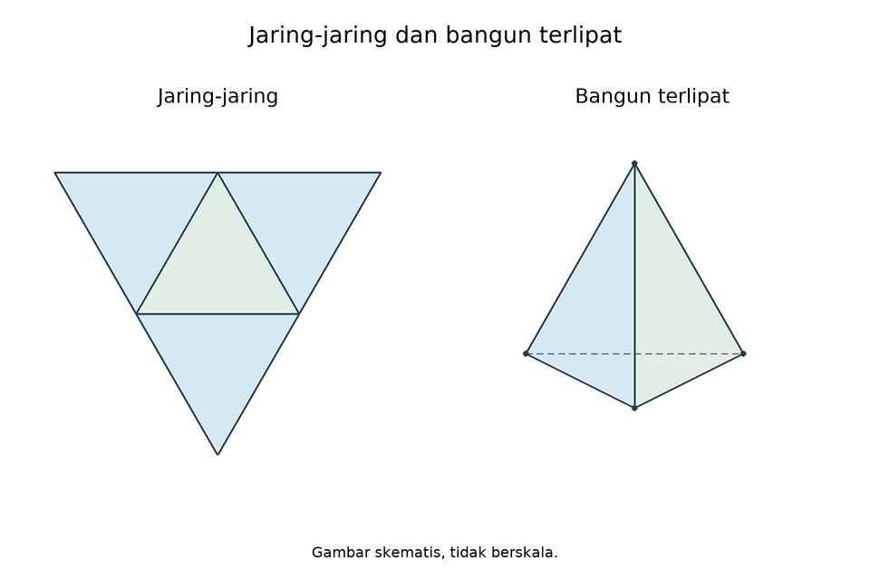
Sebuah limas segitiga dibuka menjadi jaring-jaring. Pilihlah semua pernyataan yang benar mengenai jaring-jaring dan bangun ruang tersebut!
- Jaring-jaring bangun tersebut terdiri dari 4 buah segitiga.
- Bangun ruang yang terbentuk memiliki 6 buah rusuk.
- Bangun ruang tersebut memiliki 4 buah titik sudut.
- Bangun ruang tersebut memiliki 5 titik sudut.
Kunci A,B,C dan pembahasan
Limas segitiga memiliki empat bidang segitiga, enam rusuk, dan empat titik sudut. Pernyataan A,B,C benar; D salah karena titik sudut bukan lima.
mcma-16-4-6:stock-01
Sebuah tetrahedron dibuka menjadi jaring-jaring, kemudian dilipat kembali. Pilih semua pernyataan benar tentang bangun yang sudah dilipat!
- Memiliki empat sisi berbentuk segitiga.
- Memiliki enam rusuk.
- Memiliki empat titik sudut.
- Memiliki lima titik sudut.
Kunci A,B,C dan pembahasan
Tetrahedron: F=4,E=6,V=4 dan V-E+F=2. A,B,C benar; D salah. Titik sudut dihitung setelah dilipat, bukan pada gambar datar.
mcma-16-4-6:stock-02
Sebuah limas segitiga memiliki satu alas dan tiga sisi tegak. Pilih semua hasil pemeriksaan yang benar!
- Jumlah seluruh bidangnya empat.
- Tiga rusuk alas dan tiga rusuk tegak menghasilkan enam rusuk.
- Tiga titik sudut alas ditambah satu puncak menghasilkan empat titik sudut.
- Jumlah bidang dikurangi jumlah rusuk ditambah jumlah titik sudut adalah satu.
Kunci A,B,C dan pembahasan
A=1+3=4 bidang; B=3+3=6 rusuk; C=3+1=4 titik. Untuk D,4-6+4=2, bukan1.
mcma-16-4-7:original

Sebuah tabung tertutup dibuka menjadi jaring-jaring yang terdiri dari dua lingkaran dan satu persegi panjang. Manakah pernyataan yang benar? Pilih tiga jawaban.
- Panjang persegi panjang pada jaring-jaring sama dengan keliling lingkaran alas.
- Jaring-jaring tabung hanya terdiri dari 2 bangun datar.
- Lebar persegi panjang pada jaring-jaring mewakili tinggi tabung.
- Luas jaring-jaring dihitung dengan menjumlahkan 2 luas lingkaran dan 1 luas persegi panjang.
Kunci A,C,D dan pembahasan
Pembahasan:
Pernyataan 1: Benar. Selimut tabung jika dibuka berbentuk persegi panjang dengan panjang = keliling alas.
Pernyataan 2: Salah. Jaring-jaring tabung terdiri dari 3 bangun datar (2 lingkaran dan 1 persegi panjang).
Pernyataan 3: Benar. Lebar persegi panjang tersebut sama dengan tinggi tabung.
Pernyataan 4: Benar. Luas permukaan total adalah jumlah dari seluruh komponen penyusun jaring-jaring.
mcma-16-4-7:stock-01

Tabung tanpa tutup dengan jari-jari r dan tinggi h dibuka menjadi jaring-jaring. Pilih semua pernyataan benar!
- Terdapat satu lingkaran dan satu persegi panjang.
- Lebar selimut mewakili tinggi h.
- Jaring-jaring harus memiliki dua lingkaran.
- Panjang selimut sama dengan 2*pi*r.
Kunci A,B,D dan pembahasan
Satu tutup dihilangkan, sehingga alas tinggal satu lingkaran. Selimut tetap berukuran2*pi*r kali h. A,B,D benar; C salah.
mcma-16-4-7:stock-02
Tabung tertutup dipotong sepanjang satu garis tegak dan kedua tepi lingkarannya. Pilih semua pernyataan benar tentang bidang yang dilebarkan!
- Kedua lingkaran alas dan tutup kongruen.
- Selimut dapat dilebarkan menjadi persegi panjang.
- Luas seluruh bidang adalah pi*r*r+2*pi*r*h.
- Luas kedua lingkaran bersama-sama adalah 2*pi*r*r.
Kunci A,B,D dan pembahasan
A,B,D benar. Rumus C hanya memasukkan satu lingkaran, padahal tabung tertutup memerlukan dua; luas total2*pi*r*r+2*pi*r*h.
pg-16-5-1:original
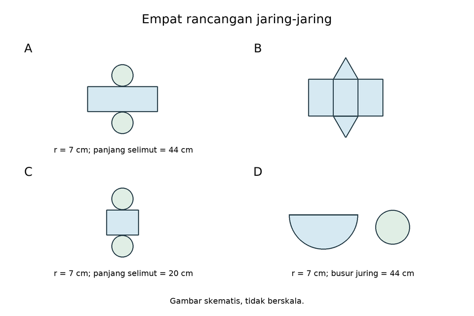
Empat rancangan jaring-jaring berikut memiliki sambungan yang sesuai. A: tabung berjari-jari 7 cm dengan panjang selimut 44 cm. B: prisma segitiga dengan dua alas kongruen dan tiga persegi panjang sesuai sisi alas. C: tabung berjari-jari 7 cm dengan panjang selimut 20 cm. D: kerucut berjari-jari alas 7 cm dengan panjang busur juring 44 cm. Gunakan pi=22/7. Rancangan manakah yang tidak dapat menutup bangun dengan sempurna?
- Jaring-jaring A
- Jaring-jaring B
- Jaring-jaring C
- Jaring-jaring D
Kunci C dan pembahasan
Tabung r7 memerlukan panjang selimut2*(22/7)*7=44cm. Rancangan C hanya20cm sehingga tidak menutup. A sesuai44cm; B sesuai komponen prisma; D busur44cm sesuai keliling alas.
pg-16-5-1:stock-01

Seluruh bidang penyusun suatu net sudah lengkap. Rancangan manakah tetap gagal menjadi bangun tertutup?
- Prisma dengan bidang dan tepi sambungan yang kongruen sesuai pasangannya.
- Tabung dengan panjang selimut tepat sama keliling alas.
- Kerucut dengan busur selimut lebih pendek daripada keliling alas.
- Limas dengan setiap tepi segitiga tegak cocok dengan alas dan sisi tetangganya.
Kunci C dan pembahasan
C menyisakan celah sepanjang sambungan alas-selimut. A,B,D sudah memenuhi kecocokan tepi yang dinyatakan.
pg-16-5-1:stock-02
Sebuah tabung tertutup akan dirakit. Dua lingkaran kongruen sudah tersedia. Kondisi selimut manakah yang menjamin sambungan alas dapat menutup tepat tanpa tumpang tindih?
- Panjang persegi panjang sama dengan diameter alas.
- Panjang persegi panjang sama dengan jari-jari alas.
- Panjang persegi panjang sama dengan keliling alas, lebarnya sama dengan tinggi tabung.
- Panjang persegi panjang sama dengan setengah keliling alas.
Kunci C dan pembahasan
Selimut harus mengelilingi seluruh tepi alas satu kali, sehingga panjangnya2*pi*r dan lebarnya h. A,B,D terlalu pendek untuk r>0.
pg-16-5-3:original

Perhatikan gambar jaring-jaring kerucut di bawah ini!

Seorang siswa menyimpulkan bahwa jari-jari lingkaran alas kerucut tersebut adalah 5 cm. Evaluasi kebenaran dari kesimpulan siswa tersebut berdasarkan data pada gambar!
- Kesimpulan siswa BENAR, karena panjang busur juring sama dengan keliling alas ($2πr=10π$).
- Kesimpulan siswa SALAH, karena jari-jari seharusnya 10 cm.
- Kesimpulan siswa SALAH, karena sudut pusat tidak digunakan dalam perhitungan.
- Kesimpulan siswa BENAR, karena jari-jari alas selalu setengah dari jari-jari juring.
Kunci A dan pembahasan
Pembahasan:
Panjang busur juring: $=\frac{15{0}^{∘}}{36{0}^{∘}}×2πs=\frac{5}{12}×2π(12)=10πcm$
Panjang busur ini sama dengan keliling lingkaran alas kerucut: $2πr=10π⇒r=5cm$
Jadi, evaluasi yang tepat adalah kesimpulan siswa benar dan perhitungannya sesuai.pg-16-5-3:k1
Perhatikan data jaring-jaring kerucut berikut.
Jari-jari juring 24 cm, sudut pusat 150 derajat.
Seorang siswa menyimpulkan bahwa jari-jari lingkaran alas kerucut tersebut adalah 10 cm. Evaluasi kebenaran dari kesimpulan siswa tersebut berdasarkan data pada gambar!
- Kesimpulan siswa BENAR, karena panjang busur juring sama dengan keliling alas ($2πr=20π$).
- Kesimpulan siswa SALAH, karena jari-jari seharusnya 20 cm.
- Kesimpulan siswa SALAH, karena sudut pusat tidak digunakan dalam perhitungan.
- Kesimpulan siswa BENAR, karena jari-jari alas selalu setengah dari jari-jari juring.
Kunci A dan pembahasan
Hasil = 10. Busur=150/360*2*pi*s=20pi. Maka r=busur/(2*pi)=10. Opsi A; r bukan setengah s karena sudutnya150, bukan180.
Jawaban: A. Kesimpulan siswa BENAR, karena panjang busur juring sama dengan keliling alas ($2πr=20π$).
pg-16-5-3:k2

Perhatikan data jaring-jaring kerucut berikut.
Jari-jari juring 36 cm, sudut pusat 150 derajat.
Seorang siswa menyimpulkan bahwa jari-jari lingkaran alas kerucut tersebut adalah 15 cm. Evaluasi kebenaran dari kesimpulan siswa tersebut berdasarkan data pada gambar!
- Kesimpulan siswa BENAR, karena panjang busur juring sama dengan keliling alas ($2πr=30π$).
- Kesimpulan siswa SALAH, karena jari-jari seharusnya 30 cm.
- Kesimpulan siswa SALAH, karena sudut pusat tidak digunakan dalam perhitungan.
- Kesimpulan siswa BENAR, karena jari-jari alas selalu setengah dari jari-jari juring.
Kunci A dan pembahasan
Hasil = 15. Busur=150/360*2*pi*s=30pi. Maka r=busur/(2*pi)=15. Opsi A; r bukan setengah s karena sudutnya150, bukan180.
Jawaban: A. Kesimpulan siswa BENAR, karena panjang busur juring sama dengan keliling alas ($2πr=30π$).
pg-16-5-3:k3
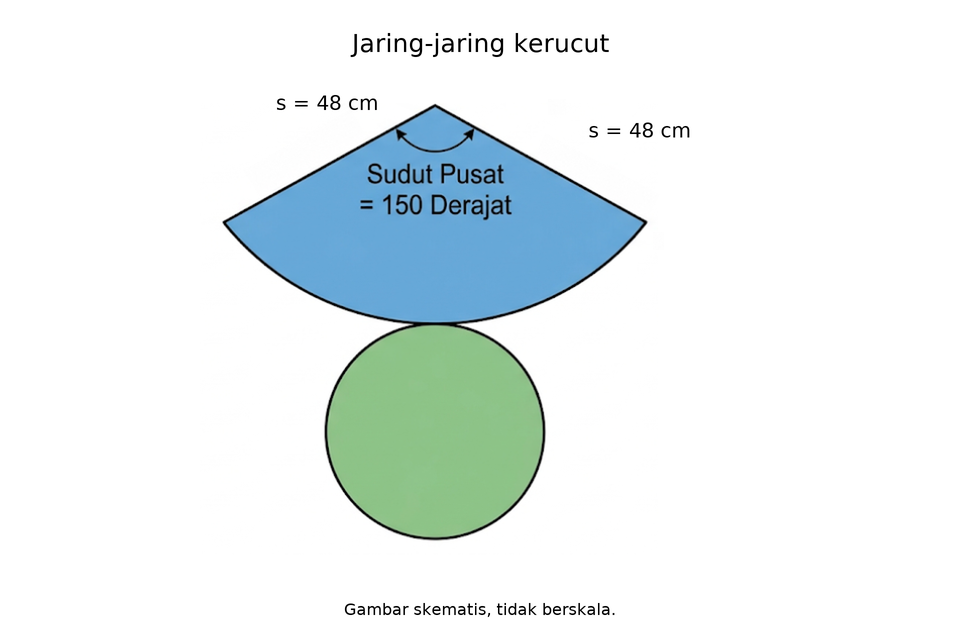
Perhatikan data jaring-jaring kerucut berikut.
Jari-jari juring 48 cm, sudut pusat 150 derajat.
Seorang siswa menyimpulkan bahwa jari-jari lingkaran alas kerucut tersebut adalah 20 cm. Evaluasi kebenaran dari kesimpulan siswa tersebut berdasarkan data pada gambar!
- Kesimpulan siswa BENAR, karena panjang busur juring sama dengan keliling alas ($2πr=40π$).
- Kesimpulan siswa SALAH, karena jari-jari seharusnya 40 cm.
- Kesimpulan siswa SALAH, karena sudut pusat tidak digunakan dalam perhitungan.
- Kesimpulan siswa BENAR, karena jari-jari alas selalu setengah dari jari-jari juring.
Kunci A dan pembahasan
Hasil = 20. Busur=150/360*2*pi*s=40pi. Maka r=busur/(2*pi)=20. Opsi A; r bukan setengah s karena sudutnya150, bukan180.
Jawaban: A. Kesimpulan siswa BENAR, karena panjang busur juring sama dengan keliling alas ($2πr=40π$).
pg-16-5-3:k4
Perhatikan data jaring-jaring kerucut berikut.
Jari-jari juring 60 cm, sudut pusat 150 derajat.
Seorang siswa menyimpulkan bahwa jari-jari lingkaran alas kerucut tersebut adalah 25 cm. Evaluasi kebenaran dari kesimpulan siswa tersebut berdasarkan data pada gambar!
- Kesimpulan siswa BENAR, karena panjang busur juring sama dengan keliling alas ($2πr=50π$).
- Kesimpulan siswa SALAH, karena jari-jari seharusnya 50 cm.
- Kesimpulan siswa SALAH, karena sudut pusat tidak digunakan dalam perhitungan.
- Kesimpulan siswa BENAR, karena jari-jari alas selalu setengah dari jari-jari juring.
Kunci A dan pembahasan
Hasil = 25. Busur=150/360*2*pi*s=50pi. Maka r=busur/(2*pi)=25. Opsi A; r bukan setengah s karena sudutnya150, bukan180.
Jawaban: A. Kesimpulan siswa BENAR, karena panjang busur juring sama dengan keliling alas ($2πr=50π$).
pg-16-5-3:k5
Perhatikan data jaring-jaring kerucut berikut.
Jari-jari juring 72 cm, sudut pusat 150 derajat.
Seorang siswa menyimpulkan bahwa jari-jari lingkaran alas kerucut tersebut adalah 30 cm. Evaluasi kebenaran dari kesimpulan siswa tersebut berdasarkan data pada gambar!
- Kesimpulan siswa BENAR, karena panjang busur juring sama dengan keliling alas ($2πr=60π$).
- Kesimpulan siswa SALAH, karena jari-jari seharusnya 60 cm.
- Kesimpulan siswa SALAH, karena sudut pusat tidak digunakan dalam perhitungan.
- Kesimpulan siswa BENAR, karena jari-jari alas selalu setengah dari jari-jari juring.
Kunci A dan pembahasan
Hasil = 30. Busur=150/360*2*pi*s=60pi. Maka r=busur/(2*pi)=30. Opsi A; r bukan setengah s karena sudutnya150, bukan180.
Jawaban: A. Kesimpulan siswa BENAR, karena panjang busur juring sama dengan keliling alas ($2πr=60π$).
pg-16-5-3:k6

Perhatikan data jaring-jaring kerucut berikut.
Jari-jari juring 84 cm, sudut pusat 150 derajat.
Seorang siswa menyimpulkan bahwa jari-jari lingkaran alas kerucut tersebut adalah 35 cm. Evaluasi kebenaran dari kesimpulan siswa tersebut berdasarkan data pada gambar!
- Kesimpulan siswa BENAR, karena panjang busur juring sama dengan keliling alas ($2πr=70π$).
- Kesimpulan siswa SALAH, karena jari-jari seharusnya 70 cm.
- Kesimpulan siswa SALAH, karena sudut pusat tidak digunakan dalam perhitungan.
- Kesimpulan siswa BENAR, karena jari-jari alas selalu setengah dari jari-jari juring.
Kunci A dan pembahasan
Hasil = 35. Busur=150/360*2*pi*s=70pi. Maka r=busur/(2*pi)=35. Opsi A; r bukan setengah s karena sudutnya150, bukan180.
Jawaban: A. Kesimpulan siswa BENAR, karena panjang busur juring sama dengan keliling alas ($2πr=70π$).
pg-16-5-3:k7

Perhatikan data jaring-jaring kerucut berikut.
Jari-jari juring 96 cm, sudut pusat 150 derajat.
Seorang siswa menyimpulkan bahwa jari-jari lingkaran alas kerucut tersebut adalah 40 cm. Evaluasi kebenaran dari kesimpulan siswa tersebut berdasarkan data pada gambar!
- Kesimpulan siswa BENAR, karena panjang busur juring sama dengan keliling alas ($2πr=80π$).
- Kesimpulan siswa SALAH, karena jari-jari seharusnya 80 cm.
- Kesimpulan siswa SALAH, karena sudut pusat tidak digunakan dalam perhitungan.
- Kesimpulan siswa BENAR, karena jari-jari alas selalu setengah dari jari-jari juring.
Kunci A dan pembahasan
Hasil = 40. Busur=150/360*2*pi*s=80pi. Maka r=busur/(2*pi)=40. Opsi A; r bukan setengah s karena sudutnya150, bukan180.
Jawaban: A. Kesimpulan siswa BENAR, karena panjang busur juring sama dengan keliling alas ($2πr=80π$).
pg-16-5-3:k8

Perhatikan data jaring-jaring kerucut berikut.
Jari-jari juring 108 cm, sudut pusat 150 derajat.
Seorang siswa menyimpulkan bahwa jari-jari lingkaran alas kerucut tersebut adalah 45 cm. Evaluasi kebenaran dari kesimpulan siswa tersebut berdasarkan data pada gambar!
- Kesimpulan siswa BENAR, karena panjang busur juring sama dengan keliling alas ($2πr=90π$).
- Kesimpulan siswa SALAH, karena jari-jari seharusnya 90 cm.
- Kesimpulan siswa SALAH, karena sudut pusat tidak digunakan dalam perhitungan.
- Kesimpulan siswa BENAR, karena jari-jari alas selalu setengah dari jari-jari juring.
Kunci A dan pembahasan
Hasil = 45. Busur=150/360*2*pi*s=90pi. Maka r=busur/(2*pi)=45. Opsi A; r bukan setengah s karena sudutnya150, bukan180.
Jawaban: A. Kesimpulan siswa BENAR, karena panjang busur juring sama dengan keliling alas ($2πr=90π$).
pg-16-5-3:k9

Perhatikan data jaring-jaring kerucut berikut.
Jari-jari juring 120 cm, sudut pusat 150 derajat.
Seorang siswa menyimpulkan bahwa jari-jari lingkaran alas kerucut tersebut adalah 50 cm. Evaluasi kebenaran dari kesimpulan siswa tersebut berdasarkan data pada gambar!
- Kesimpulan siswa BENAR, karena panjang busur juring sama dengan keliling alas ($2πr=100π$).
- Kesimpulan siswa SALAH, karena jari-jari seharusnya 100 cm.
- Kesimpulan siswa SALAH, karena sudut pusat tidak digunakan dalam perhitungan.
- Kesimpulan siswa BENAR, karena jari-jari alas selalu setengah dari jari-jari juring.
Kunci A dan pembahasan
Hasil = 50. Busur=150/360*2*pi*s=100pi. Maka r=busur/(2*pi)=50. Opsi A; r bukan setengah s karena sudutnya150, bukan180.
Jawaban: A. Kesimpulan siswa BENAR, karena panjang busur juring sama dengan keliling alas ($2πr=100π$).
pg-16-5-3:k10
Perhatikan data jaring-jaring kerucut berikut.
Jari-jari juring 132 cm, sudut pusat 150 derajat.
Seorang siswa menyimpulkan bahwa jari-jari lingkaran alas kerucut tersebut adalah 55 cm. Evaluasi kebenaran dari kesimpulan siswa tersebut berdasarkan data pada gambar!
- Kesimpulan siswa BENAR, karena panjang busur juring sama dengan keliling alas ($2πr=110π$).
- Kesimpulan siswa SALAH, karena jari-jari seharusnya 110 cm.
- Kesimpulan siswa SALAH, karena sudut pusat tidak digunakan dalam perhitungan.
- Kesimpulan siswa BENAR, karena jari-jari alas selalu setengah dari jari-jari juring.
Kunci A dan pembahasan
Hasil = 55. Busur=150/360*2*pi*s=110pi. Maka r=busur/(2*pi)=55. Opsi A; r bukan setengah s karena sudutnya150, bukan180.
Jawaban: A. Kesimpulan siswa BENAR, karena panjang busur juring sama dengan keliling alas ($2πr=110π$).
pg-16-5-3:k11
Perhatikan data jaring-jaring kerucut berikut.
Jari-jari juring 144 cm, sudut pusat 150 derajat.
Seorang siswa menyimpulkan bahwa jari-jari lingkaran alas kerucut tersebut adalah 60 cm. Evaluasi kebenaran dari kesimpulan siswa tersebut berdasarkan data pada gambar!
- Kesimpulan siswa BENAR, karena panjang busur juring sama dengan keliling alas ($2πr=120π$).
- Kesimpulan siswa SALAH, karena jari-jari seharusnya 120 cm.
- Kesimpulan siswa SALAH, karena sudut pusat tidak digunakan dalam perhitungan.
- Kesimpulan siswa BENAR, karena jari-jari alas selalu setengah dari jari-jari juring.
Kunci A dan pembahasan
Hasil = 60. Busur=150/360*2*pi*s=120pi. Maka r=busur/(2*pi)=60. Opsi A; r bukan setengah s karena sudutnya150, bukan180.
Jawaban: A. Kesimpulan siswa BENAR, karena panjang busur juring sama dengan keliling alas ($2πr=120π$).
pg-16-5-3:k12
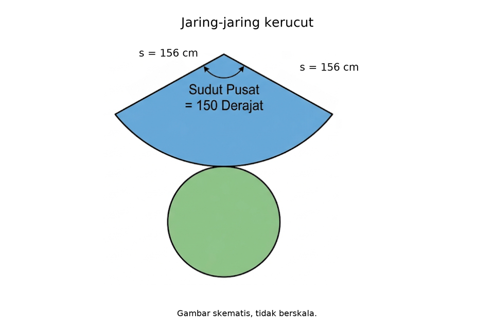
Perhatikan data jaring-jaring kerucut berikut.
Jari-jari juring 156 cm, sudut pusat 150 derajat.
Seorang siswa menyimpulkan bahwa jari-jari lingkaran alas kerucut tersebut adalah 65 cm. Evaluasi kebenaran dari kesimpulan siswa tersebut berdasarkan data pada gambar!
- Kesimpulan siswa BENAR, karena panjang busur juring sama dengan keliling alas ($2πr=130π$).
- Kesimpulan siswa SALAH, karena jari-jari seharusnya 130 cm.
- Kesimpulan siswa SALAH, karena sudut pusat tidak digunakan dalam perhitungan.
- Kesimpulan siswa BENAR, karena jari-jari alas selalu setengah dari jari-jari juring.
Kunci A dan pembahasan
Hasil = 65. Busur=150/360*2*pi*s=130pi. Maka r=busur/(2*pi)=65. Opsi A; r bukan setengah s karena sudutnya150, bukan180.
Jawaban: A. Kesimpulan siswa BENAR, karena panjang busur juring sama dengan keliling alas ($2πr=130π$).
pg-16-5-3:k13
Perhatikan data jaring-jaring kerucut berikut.
Jari-jari juring 168 cm, sudut pusat 150 derajat.
Seorang siswa menyimpulkan bahwa jari-jari lingkaran alas kerucut tersebut adalah 70 cm. Evaluasi kebenaran dari kesimpulan siswa tersebut berdasarkan data pada gambar!
- Kesimpulan siswa BENAR, karena panjang busur juring sama dengan keliling alas ($2πr=140π$).
- Kesimpulan siswa SALAH, karena jari-jari seharusnya 140 cm.
- Kesimpulan siswa SALAH, karena sudut pusat tidak digunakan dalam perhitungan.
- Kesimpulan siswa BENAR, karena jari-jari alas selalu setengah dari jari-jari juring.
Kunci A dan pembahasan
Hasil = 70. Busur=150/360*2*pi*s=140pi. Maka r=busur/(2*pi)=70. Opsi A; r bukan setengah s karena sudutnya150, bukan180.
Jawaban: A. Kesimpulan siswa BENAR, karena panjang busur juring sama dengan keliling alas ($2πr=140π$).
pg-16-5-3:k14

Perhatikan data jaring-jaring kerucut berikut.
Jari-jari juring 180 cm, sudut pusat 150 derajat.
Seorang siswa menyimpulkan bahwa jari-jari lingkaran alas kerucut tersebut adalah 75 cm. Evaluasi kebenaran dari kesimpulan siswa tersebut berdasarkan data pada gambar!
- Kesimpulan siswa BENAR, karena panjang busur juring sama dengan keliling alas ($2πr=150π$).
- Kesimpulan siswa SALAH, karena jari-jari seharusnya 150 cm.
- Kesimpulan siswa SALAH, karena sudut pusat tidak digunakan dalam perhitungan.
- Kesimpulan siswa BENAR, karena jari-jari alas selalu setengah dari jari-jari juring.
Kunci A dan pembahasan
Hasil = 75. Busur=150/360*2*pi*s=150pi. Maka r=busur/(2*pi)=75. Opsi A; r bukan setengah s karena sudutnya150, bukan180.
Jawaban: A. Kesimpulan siswa BENAR, karena panjang busur juring sama dengan keliling alas ($2πr=150π$).
pg-16-5-3:k15

Perhatikan data jaring-jaring kerucut berikut.
Jari-jari juring 192 cm, sudut pusat 150 derajat.
Seorang siswa menyimpulkan bahwa jari-jari lingkaran alas kerucut tersebut adalah 80 cm. Evaluasi kebenaran dari kesimpulan siswa tersebut berdasarkan data pada gambar!
- Kesimpulan siswa BENAR, karena panjang busur juring sama dengan keliling alas ($2πr=160π$).
- Kesimpulan siswa SALAH, karena jari-jari seharusnya 160 cm.
- Kesimpulan siswa SALAH, karena sudut pusat tidak digunakan dalam perhitungan.
- Kesimpulan siswa BENAR, karena jari-jari alas selalu setengah dari jari-jari juring.
Kunci A dan pembahasan
Hasil = 80. Busur=150/360*2*pi*s=160pi. Maka r=busur/(2*pi)=80. Opsi A; r bukan setengah s karena sudutnya150, bukan180.
Jawaban: A. Kesimpulan siswa BENAR, karena panjang busur juring sama dengan keliling alas ($2πr=160π$).
pg-16-5-3:k16

Perhatikan data jaring-jaring kerucut berikut.
Jari-jari juring 204 cm, sudut pusat 150 derajat.
Seorang siswa menyimpulkan bahwa jari-jari lingkaran alas kerucut tersebut adalah 85 cm. Evaluasi kebenaran dari kesimpulan siswa tersebut berdasarkan data pada gambar!
- Kesimpulan siswa BENAR, karena panjang busur juring sama dengan keliling alas ($2πr=170π$).
- Kesimpulan siswa SALAH, karena jari-jari seharusnya 170 cm.
- Kesimpulan siswa SALAH, karena sudut pusat tidak digunakan dalam perhitungan.
- Kesimpulan siswa BENAR, karena jari-jari alas selalu setengah dari jari-jari juring.
Kunci A dan pembahasan
Hasil = 85. Busur=150/360*2*pi*s=170pi. Maka r=busur/(2*pi)=85. Opsi A; r bukan setengah s karena sudutnya150, bukan180.
Jawaban: A. Kesimpulan siswa BENAR, karena panjang busur juring sama dengan keliling alas ($2πr=170π$).
pg-16-5-3:k17

Perhatikan data jaring-jaring kerucut berikut.
Jari-jari juring 216 cm, sudut pusat 150 derajat.
Seorang siswa menyimpulkan bahwa jari-jari lingkaran alas kerucut tersebut adalah 90 cm. Evaluasi kebenaran dari kesimpulan siswa tersebut berdasarkan data pada gambar!
- Kesimpulan siswa BENAR, karena panjang busur juring sama dengan keliling alas ($2πr=180π$).
- Kesimpulan siswa SALAH, karena jari-jari seharusnya 180 cm.
- Kesimpulan siswa SALAH, karena sudut pusat tidak digunakan dalam perhitungan.
- Kesimpulan siswa BENAR, karena jari-jari alas selalu setengah dari jari-jari juring.
Kunci A dan pembahasan
Hasil = 90. Busur=150/360*2*pi*s=180pi. Maka r=busur/(2*pi)=90. Opsi A; r bukan setengah s karena sudutnya150, bukan180.
Jawaban: A. Kesimpulan siswa BENAR, karena panjang busur juring sama dengan keliling alas ($2πr=180π$).
pg-16-5-3:k18
Perhatikan data jaring-jaring kerucut berikut.
Jari-jari juring 228 cm, sudut pusat 150 derajat.
Seorang siswa menyimpulkan bahwa jari-jari lingkaran alas kerucut tersebut adalah 95 cm. Evaluasi kebenaran dari kesimpulan siswa tersebut berdasarkan data pada gambar!
- Kesimpulan siswa BENAR, karena panjang busur juring sama dengan keliling alas ($2πr=190π$).
- Kesimpulan siswa SALAH, karena jari-jari seharusnya 190 cm.
- Kesimpulan siswa SALAH, karena sudut pusat tidak digunakan dalam perhitungan.
- Kesimpulan siswa BENAR, karena jari-jari alas selalu setengah dari jari-jari juring.
Kunci A dan pembahasan
Hasil = 95. Busur=150/360*2*pi*s=190pi. Maka r=busur/(2*pi)=95. Opsi A; r bukan setengah s karena sudutnya150, bukan180.
Jawaban: A. Kesimpulan siswa BENAR, karena panjang busur juring sama dengan keliling alas ($2πr=190π$).
pg-16-5-3:k19

Perhatikan data jaring-jaring kerucut berikut.
Jari-jari juring 240 cm, sudut pusat 150 derajat.
Seorang siswa menyimpulkan bahwa jari-jari lingkaran alas kerucut tersebut adalah 100 cm. Evaluasi kebenaran dari kesimpulan siswa tersebut berdasarkan data pada gambar!
- Kesimpulan siswa BENAR, karena panjang busur juring sama dengan keliling alas ($2πr=200π$).
- Kesimpulan siswa SALAH, karena jari-jari seharusnya 200 cm.
- Kesimpulan siswa SALAH, karena sudut pusat tidak digunakan dalam perhitungan.
- Kesimpulan siswa BENAR, karena jari-jari alas selalu setengah dari jari-jari juring.
Kunci A dan pembahasan
Hasil = 100. Busur=150/360*2*pi*s=200pi. Maka r=busur/(2*pi)=100. Opsi A; r bukan setengah s karena sudutnya150, bukan180.
Jawaban: A. Kesimpulan siswa BENAR, karena panjang busur juring sama dengan keliling alas ($2πr=200π$).
pg-16-5-3:k20
Perhatikan data jaring-jaring kerucut berikut.
Jari-jari juring 252 cm, sudut pusat 150 derajat.
Seorang siswa menyimpulkan bahwa jari-jari lingkaran alas kerucut tersebut adalah 105 cm. Evaluasi kebenaran dari kesimpulan siswa tersebut berdasarkan data pada gambar!
- Kesimpulan siswa BENAR, karena panjang busur juring sama dengan keliling alas ($2πr=210π$).
- Kesimpulan siswa SALAH, karena jari-jari seharusnya 210 cm.
- Kesimpulan siswa SALAH, karena sudut pusat tidak digunakan dalam perhitungan.
- Kesimpulan siswa BENAR, karena jari-jari alas selalu setengah dari jari-jari juring.
Kunci A dan pembahasan
Hasil = 105. Busur=150/360*2*pi*s=210pi. Maka r=busur/(2*pi)=105. Opsi A; r bukan setengah s karena sudutnya150, bukan180.
Jawaban: A. Kesimpulan siswa BENAR, karena panjang busur juring sama dengan keliling alas ($2πr=210π$).
pg-16-5-3:k21

Perhatikan data jaring-jaring kerucut berikut.
Jari-jari juring 264 cm, sudut pusat 150 derajat.
Seorang siswa menyimpulkan bahwa jari-jari lingkaran alas kerucut tersebut adalah 110 cm. Evaluasi kebenaran dari kesimpulan siswa tersebut berdasarkan data pada gambar!
- Kesimpulan siswa BENAR, karena panjang busur juring sama dengan keliling alas ($2πr=220π$).
- Kesimpulan siswa SALAH, karena jari-jari seharusnya 220 cm.
- Kesimpulan siswa SALAH, karena sudut pusat tidak digunakan dalam perhitungan.
- Kesimpulan siswa BENAR, karena jari-jari alas selalu setengah dari jari-jari juring.
Kunci A dan pembahasan
Hasil = 110. Busur=150/360*2*pi*s=220pi. Maka r=busur/(2*pi)=110. Opsi A; r bukan setengah s karena sudutnya150, bukan180.
Jawaban: A. Kesimpulan siswa BENAR, karena panjang busur juring sama dengan keliling alas ($2πr=220π$).
pg-16-5-3:k22

Perhatikan data jaring-jaring kerucut berikut.
Jari-jari juring 276 cm, sudut pusat 150 derajat.
Seorang siswa menyimpulkan bahwa jari-jari lingkaran alas kerucut tersebut adalah 115 cm. Evaluasi kebenaran dari kesimpulan siswa tersebut berdasarkan data pada gambar!
- Kesimpulan siswa BENAR, karena panjang busur juring sama dengan keliling alas ($2πr=230π$).
- Kesimpulan siswa SALAH, karena jari-jari seharusnya 230 cm.
- Kesimpulan siswa SALAH, karena sudut pusat tidak digunakan dalam perhitungan.
- Kesimpulan siswa BENAR, karena jari-jari alas selalu setengah dari jari-jari juring.
Kunci A dan pembahasan
Hasil = 115. Busur=150/360*2*pi*s=230pi. Maka r=busur/(2*pi)=115. Opsi A; r bukan setengah s karena sudutnya150, bukan180.
Jawaban: A. Kesimpulan siswa BENAR, karena panjang busur juring sama dengan keliling alas ($2πr=230π$).
pg-16-5-3:k23

Perhatikan data jaring-jaring kerucut berikut.
Jari-jari juring 288 cm, sudut pusat 150 derajat.
Seorang siswa menyimpulkan bahwa jari-jari lingkaran alas kerucut tersebut adalah 120 cm. Evaluasi kebenaran dari kesimpulan siswa tersebut berdasarkan data pada gambar!
- Kesimpulan siswa BENAR, karena panjang busur juring sama dengan keliling alas ($2πr=240π$).
- Kesimpulan siswa SALAH, karena jari-jari seharusnya 240 cm.
- Kesimpulan siswa SALAH, karena sudut pusat tidak digunakan dalam perhitungan.
- Kesimpulan siswa BENAR, karena jari-jari alas selalu setengah dari jari-jari juring.
Kunci A dan pembahasan
Hasil = 120. Busur=150/360*2*pi*s=240pi. Maka r=busur/(2*pi)=120. Opsi A; r bukan setengah s karena sudutnya150, bukan180.
Jawaban: A. Kesimpulan siswa BENAR, karena panjang busur juring sama dengan keliling alas ($2πr=240π$).
pg-16-5-3:k24
Perhatikan data jaring-jaring kerucut berikut.
Jari-jari juring 300 cm, sudut pusat 150 derajat.
Seorang siswa menyimpulkan bahwa jari-jari lingkaran alas kerucut tersebut adalah 125 cm. Evaluasi kebenaran dari kesimpulan siswa tersebut berdasarkan data pada gambar!
- Kesimpulan siswa BENAR, karena panjang busur juring sama dengan keliling alas ($2πr=250π$).
- Kesimpulan siswa SALAH, karena jari-jari seharusnya 250 cm.
- Kesimpulan siswa SALAH, karena sudut pusat tidak digunakan dalam perhitungan.
- Kesimpulan siswa BENAR, karena jari-jari alas selalu setengah dari jari-jari juring.
Kunci A dan pembahasan
Hasil = 125. Busur=150/360*2*pi*s=250pi. Maka r=busur/(2*pi)=125. Opsi A; r bukan setengah s karena sudutnya150, bukan180.
Jawaban: A. Kesimpulan siswa BENAR, karena panjang busur juring sama dengan keliling alas ($2πr=250π$).
pg-16-5-3:k25
Perhatikan data jaring-jaring kerucut berikut.
Jari-jari juring 312 cm, sudut pusat 150 derajat.
Seorang siswa menyimpulkan bahwa jari-jari lingkaran alas kerucut tersebut adalah 130 cm. Evaluasi kebenaran dari kesimpulan siswa tersebut berdasarkan data pada gambar!
- Kesimpulan siswa BENAR, karena panjang busur juring sama dengan keliling alas ($2πr=260π$).
- Kesimpulan siswa SALAH, karena jari-jari seharusnya 260 cm.
- Kesimpulan siswa SALAH, karena sudut pusat tidak digunakan dalam perhitungan.
- Kesimpulan siswa BENAR, karena jari-jari alas selalu setengah dari jari-jari juring.
Kunci A dan pembahasan
Hasil = 130. Busur=150/360*2*pi*s=260pi. Maka r=busur/(2*pi)=130. Opsi A; r bukan setengah s karena sudutnya150, bukan180.
Jawaban: A. Kesimpulan siswa BENAR, karena panjang busur juring sama dengan keliling alas ($2πr=260π$).
pg-16-5-3:k26
Perhatikan data jaring-jaring kerucut berikut.
Jari-jari juring 324 cm, sudut pusat 150 derajat.
Seorang siswa menyimpulkan bahwa jari-jari lingkaran alas kerucut tersebut adalah 135 cm. Evaluasi kebenaran dari kesimpulan siswa tersebut berdasarkan data pada gambar!
- Kesimpulan siswa BENAR, karena panjang busur juring sama dengan keliling alas ($2πr=270π$).
- Kesimpulan siswa SALAH, karena jari-jari seharusnya 270 cm.
- Kesimpulan siswa SALAH, karena sudut pusat tidak digunakan dalam perhitungan.
- Kesimpulan siswa BENAR, karena jari-jari alas selalu setengah dari jari-jari juring.
Kunci A dan pembahasan
Hasil = 135. Busur=150/360*2*pi*s=270pi. Maka r=busur/(2*pi)=135. Opsi A; r bukan setengah s karena sudutnya150, bukan180.
Jawaban: A. Kesimpulan siswa BENAR, karena panjang busur juring sama dengan keliling alas ($2πr=270π$).
pg-16-5-3:k27

Perhatikan data jaring-jaring kerucut berikut.
Jari-jari juring 336 cm, sudut pusat 150 derajat.
Seorang siswa menyimpulkan bahwa jari-jari lingkaran alas kerucut tersebut adalah 140 cm. Evaluasi kebenaran dari kesimpulan siswa tersebut berdasarkan data pada gambar!
- Kesimpulan siswa BENAR, karena panjang busur juring sama dengan keliling alas ($2πr=280π$).
- Kesimpulan siswa SALAH, karena jari-jari seharusnya 280 cm.
- Kesimpulan siswa SALAH, karena sudut pusat tidak digunakan dalam perhitungan.
- Kesimpulan siswa BENAR, karena jari-jari alas selalu setengah dari jari-jari juring.
Kunci A dan pembahasan
Hasil = 140. Busur=150/360*2*pi*s=280pi. Maka r=busur/(2*pi)=140. Opsi A; r bukan setengah s karena sudutnya150, bukan180.
Jawaban: A. Kesimpulan siswa BENAR, karena panjang busur juring sama dengan keliling alas ($2πr=280π$).
pg-16-5-3:k28
Perhatikan data jaring-jaring kerucut berikut.
Jari-jari juring 348 cm, sudut pusat 150 derajat.
Seorang siswa menyimpulkan bahwa jari-jari lingkaran alas kerucut tersebut adalah 145 cm. Evaluasi kebenaran dari kesimpulan siswa tersebut berdasarkan data pada gambar!
- Kesimpulan siswa BENAR, karena panjang busur juring sama dengan keliling alas ($2πr=290π$).
- Kesimpulan siswa SALAH, karena jari-jari seharusnya 290 cm.
- Kesimpulan siswa SALAH, karena sudut pusat tidak digunakan dalam perhitungan.
- Kesimpulan siswa BENAR, karena jari-jari alas selalu setengah dari jari-jari juring.
Kunci A dan pembahasan
Hasil = 145. Busur=150/360*2*pi*s=290pi. Maka r=busur/(2*pi)=145. Opsi A; r bukan setengah s karena sudutnya150, bukan180.
Jawaban: A. Kesimpulan siswa BENAR, karena panjang busur juring sama dengan keliling alas ($2πr=290π$).
pg-16-5-3:k29

Perhatikan data jaring-jaring kerucut berikut.
Jari-jari juring 360 cm, sudut pusat 150 derajat.
Seorang siswa menyimpulkan bahwa jari-jari lingkaran alas kerucut tersebut adalah 150 cm. Evaluasi kebenaran dari kesimpulan siswa tersebut berdasarkan data pada gambar!
- Kesimpulan siswa BENAR, karena panjang busur juring sama dengan keliling alas ($2πr=300π$).
- Kesimpulan siswa SALAH, karena jari-jari seharusnya 300 cm.
- Kesimpulan siswa SALAH, karena sudut pusat tidak digunakan dalam perhitungan.
- Kesimpulan siswa BENAR, karena jari-jari alas selalu setengah dari jari-jari juring.
Kunci A dan pembahasan
Hasil = 150. Busur=150/360*2*pi*s=300pi. Maka r=busur/(2*pi)=150. Opsi A; r bukan setengah s karena sudutnya150, bukan180.
Jawaban: A. Kesimpulan siswa BENAR, karena panjang busur juring sama dengan keliling alas ($2πr=300π$).
pg-16-5-3:k30
Perhatikan data jaring-jaring kerucut berikut.
Jari-jari juring 372 cm, sudut pusat 150 derajat.
Seorang siswa menyimpulkan bahwa jari-jari lingkaran alas kerucut tersebut adalah 155 cm. Evaluasi kebenaran dari kesimpulan siswa tersebut berdasarkan data pada gambar!
- Kesimpulan siswa BENAR, karena panjang busur juring sama dengan keliling alas ($2πr=310π$).
- Kesimpulan siswa SALAH, karena jari-jari seharusnya 310 cm.
- Kesimpulan siswa SALAH, karena sudut pusat tidak digunakan dalam perhitungan.
- Kesimpulan siswa BENAR, karena jari-jari alas selalu setengah dari jari-jari juring.
Kunci A dan pembahasan
Hasil = 155. Busur=150/360*2*pi*s=310pi. Maka r=busur/(2*pi)=155. Opsi A; r bukan setengah s karena sudutnya150, bukan180.
Jawaban: A. Kesimpulan siswa BENAR, karena panjang busur juring sama dengan keliling alas ($2πr=310π$).
pg-16-5-5:original
Perhatikan gambar jaring-jaring limas segi empat beraturan di bawah ini!

Berdasarkan gambar tersebut, evaluasilah pernyataan-pernyataan berikut!
(1) Luas alas limas adalah $100c{m}^{2}$.
(2) Luas satu sisi tegak adalah $65c{m}^{2}$.
(3) Tinggi limas (jarak titik puncak ke alas) adalah $13cm$.
(4) Luas total jaring-jaring adalah $360c{m}^{2}$.
Pernyataan yang BENAR adalah...
- (1) dan (3)
- (2) dan (4)
- (1), (2), dan (3)
- (1), (2), dan (4)
Kunci D dan pembahasan
Pembahasan:
(1) Luas alas $=s×s=10×10=100 c{m}^{2}$. (Benar)
(2) Luas 1 sisi tegak $=\frac{1}{2}×alas×tinggi segitiga=\frac{1}{2}×10×13=65 c{m}^{2}$. (Benar)
(3) Angka 13 cm pada jaring-jaring adalah tinggi sisi tegak (apotema), bukan tinggi limas. (Salah)
(4) Luas total $=Luasalas+4(Luassisitegak)=100+4(65)=100+260=360c{m}^{2}$. (Benar)
Jadi, pernyataan yang benar adalah (1), (2), dan (4).pg-16-5-5:k1

Perhatikan data jaring-jaring limas segi empat beraturan berikut.
Sisi alas persegi 20 cm; tinggi setiap segitiga sisi tegak 26 cm.
Berdasarkan gambar tersebut, evaluasilah pernyataan-pernyataan berikut!
(1) Luas alas limas adalah $400cm^{2}$.
(2) Luas satu sisi tegak adalah $260cm^{2}$.
(3) Tinggi limas (jarak titik puncak ke alas) adalah $24cm$.
(4) Luas total jaring-jaring adalah $1.600cm^{2}$.
Pernyataan yang BENAR adalah...
- (1) dan (3)
- (2) dan (4)
- (1), (2), dan (3)
- (1), (2), dan (4)
Kunci C dan pembahasan
Hasil = 1.440. Alas=400, tiap sisi tegak=260, tinggi limas=24, total1.440. Pada original(1),(2),(4) benar; pada varian(1),(2),(3) benar.
Jawaban: C. (1), (2), dan (3)
pg-16-5-5:k2

Perhatikan data jaring-jaring limas segi empat beraturan berikut.
Sisi alas persegi 30 cm; tinggi setiap segitiga sisi tegak 39 cm.
Berdasarkan gambar tersebut, evaluasilah pernyataan-pernyataan berikut!
(1) Luas alas limas adalah $900cm^{2}$.
(2) Luas satu sisi tegak adalah $585cm^{2}$.
(3) Tinggi limas (jarak titik puncak ke alas) adalah $36cm$.
(4) Luas total jaring-jaring adalah $3.600cm^{2}$.
Pernyataan yang BENAR adalah...
- (1) dan (3)
- (2) dan (4)
- (1), (2), dan (3)
- (1), (2), dan (4)
Kunci C dan pembahasan
Hasil = 3.240. Alas=900, tiap sisi tegak=585, tinggi limas=36, total3.240. Pada original(1),(2),(4) benar; pada varian(1),(2),(3) benar.
Jawaban: C. (1), (2), dan (3)
pg-16-5-5:k3

Perhatikan data jaring-jaring limas segi empat beraturan berikut.
Sisi alas persegi 40 cm; tinggi setiap segitiga sisi tegak 52 cm.
Berdasarkan gambar tersebut, evaluasilah pernyataan-pernyataan berikut!
(1) Luas alas limas adalah $1.600cm^{2}$.
(2) Luas satu sisi tegak adalah $1.040cm^{2}$.
(3) Tinggi limas (jarak titik puncak ke alas) adalah $48cm$.
(4) Luas total jaring-jaring adalah $6.400cm^{2}$.
Pernyataan yang BENAR adalah...
- (1) dan (3)
- (2) dan (4)
- (1), (2), dan (3)
- (1), (2), dan (4)
Kunci C dan pembahasan
Hasil = 5.760. Alas=1.600, tiap sisi tegak=1.040, tinggi limas=48, total5.760. Pada original(1),(2),(4) benar; pada varian(1),(2),(3) benar.
Jawaban: C. (1), (2), dan (3)
pg-16-5-5:k4

Perhatikan data jaring-jaring limas segi empat beraturan berikut.
Sisi alas persegi 50 cm; tinggi setiap segitiga sisi tegak 65 cm.
Berdasarkan gambar tersebut, evaluasilah pernyataan-pernyataan berikut!
(1) Luas alas limas adalah $2.500cm^{2}$.
(2) Luas satu sisi tegak adalah $1.625cm^{2}$.
(3) Tinggi limas (jarak titik puncak ke alas) adalah $60cm$.
(4) Luas total jaring-jaring adalah $10.000cm^{2}$.
Pernyataan yang BENAR adalah...
- (1) dan (3)
- (2) dan (4)
- (1), (2), dan (3)
- (1), (2), dan (4)
Kunci C dan pembahasan
Hasil = 9.000. Alas=2.500, tiap sisi tegak=1.625, tinggi limas=60, total9.000. Pada original(1),(2),(4) benar; pada varian(1),(2),(3) benar.
Jawaban: C. (1), (2), dan (3)
pg-16-5-5:k5
Perhatikan data jaring-jaring limas segi empat beraturan berikut.
Sisi alas persegi 60 cm; tinggi setiap segitiga sisi tegak 78 cm.
Berdasarkan gambar tersebut, evaluasilah pernyataan-pernyataan berikut!
(1) Luas alas limas adalah $3.600cm^{2}$.
(2) Luas satu sisi tegak adalah $2.340cm^{2}$.
(3) Tinggi limas (jarak titik puncak ke alas) adalah $72cm$.
(4) Luas total jaring-jaring adalah $14.400cm^{2}$.
Pernyataan yang BENAR adalah...
- (1) dan (3)
- (2) dan (4)
- (1), (2), dan (3)
- (1), (2), dan (4)
Kunci C dan pembahasan
Hasil = 12.960. Alas=3.600, tiap sisi tegak=2.340, tinggi limas=72, total12.960. Pada original(1),(2),(4) benar; pada varian(1),(2),(3) benar.
Jawaban: C. (1), (2), dan (3)
pg-16-5-5:k6
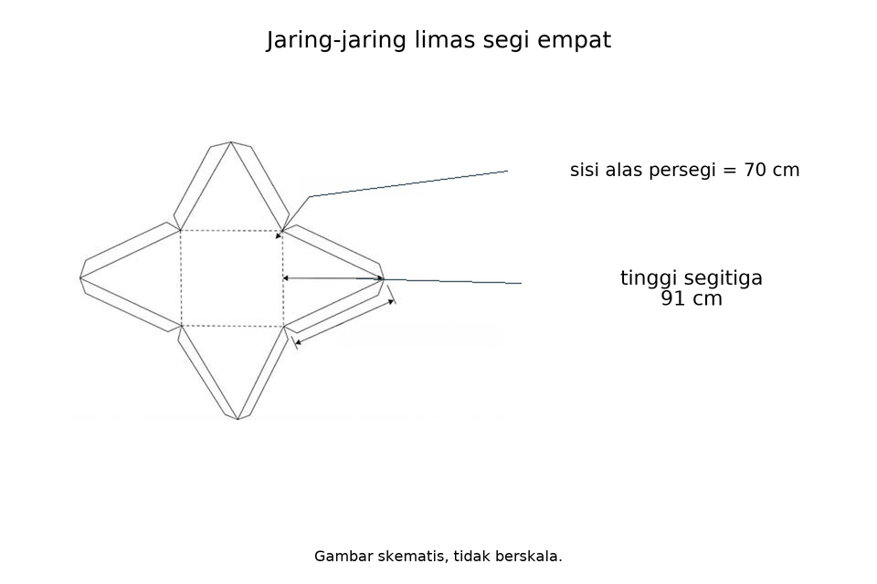
Perhatikan data jaring-jaring limas segi empat beraturan berikut.
Sisi alas persegi 70 cm; tinggi setiap segitiga sisi tegak 91 cm.
Berdasarkan gambar tersebut, evaluasilah pernyataan-pernyataan berikut!
(1) Luas alas limas adalah $4.900cm^{2}$.
(2) Luas satu sisi tegak adalah $3.185cm^{2}$.
(3) Tinggi limas (jarak titik puncak ke alas) adalah $84cm$.
(4) Luas total jaring-jaring adalah $19.600cm^{2}$.
Pernyataan yang BENAR adalah...
- (1) dan (3)
- (2) dan (4)
- (1), (2), dan (3)
- (1), (2), dan (4)
Kunci C dan pembahasan
Hasil = 17.640. Alas=4.900, tiap sisi tegak=3.185, tinggi limas=84, total17.640. Pada original(1),(2),(4) benar; pada varian(1),(2),(3) benar.
Jawaban: C. (1), (2), dan (3)
pg-16-5-5:k7

Perhatikan data jaring-jaring limas segi empat beraturan berikut.
Sisi alas persegi 80 cm; tinggi setiap segitiga sisi tegak 104 cm.
Berdasarkan gambar tersebut, evaluasilah pernyataan-pernyataan berikut!
(1) Luas alas limas adalah $6.400cm^{2}$.
(2) Luas satu sisi tegak adalah $4.160cm^{2}$.
(3) Tinggi limas (jarak titik puncak ke alas) adalah $96cm$.
(4) Luas total jaring-jaring adalah $25.600cm^{2}$.
Pernyataan yang BENAR adalah...
- (1) dan (3)
- (2) dan (4)
- (1), (2), dan (3)
- (1), (2), dan (4)
Kunci C dan pembahasan
Hasil = 23.040. Alas=6.400, tiap sisi tegak=4.160, tinggi limas=96, total23.040. Pada original(1),(2),(4) benar; pada varian(1),(2),(3) benar.
Jawaban: C. (1), (2), dan (3)
pg-16-5-5:k8
Perhatikan data jaring-jaring limas segi empat beraturan berikut.
Sisi alas persegi 90 cm; tinggi setiap segitiga sisi tegak 117 cm.
Berdasarkan gambar tersebut, evaluasilah pernyataan-pernyataan berikut!
(1) Luas alas limas adalah $8.100cm^{2}$.
(2) Luas satu sisi tegak adalah $5.265cm^{2}$.
(3) Tinggi limas (jarak titik puncak ke alas) adalah $108cm$.
(4) Luas total jaring-jaring adalah $32.400cm^{2}$.
Pernyataan yang BENAR adalah...
- (1) dan (3)
- (2) dan (4)
- (1), (2), dan (3)
- (1), (2), dan (4)
Kunci C dan pembahasan
Hasil = 29.160. Alas=8.100, tiap sisi tegak=5.265, tinggi limas=108, total29.160. Pada original(1),(2),(4) benar; pada varian(1),(2),(3) benar.
Jawaban: C. (1), (2), dan (3)
pg-16-5-5:k9
Perhatikan data jaring-jaring limas segi empat beraturan berikut.
Sisi alas persegi 100 cm; tinggi setiap segitiga sisi tegak 130 cm.
Berdasarkan gambar tersebut, evaluasilah pernyataan-pernyataan berikut!
(1) Luas alas limas adalah $10.000cm^{2}$.
(2) Luas satu sisi tegak adalah $6.500cm^{2}$.
(3) Tinggi limas (jarak titik puncak ke alas) adalah $120cm$.
(4) Luas total jaring-jaring adalah $40.000cm^{2}$.
Pernyataan yang BENAR adalah...
- (1) dan (3)
- (2) dan (4)
- (1), (2), dan (3)
- (1), (2), dan (4)
Kunci C dan pembahasan
Hasil = 36.000. Alas=10.000, tiap sisi tegak=6.500, tinggi limas=120, total36.000. Pada original(1),(2),(4) benar; pada varian(1),(2),(3) benar.
Jawaban: C. (1), (2), dan (3)
pg-16-5-5:k10

Perhatikan data jaring-jaring limas segi empat beraturan berikut.
Sisi alas persegi 110 cm; tinggi setiap segitiga sisi tegak 143 cm.
Berdasarkan gambar tersebut, evaluasilah pernyataan-pernyataan berikut!
(1) Luas alas limas adalah $12.100cm^{2}$.
(2) Luas satu sisi tegak adalah $7.865cm^{2}$.
(3) Tinggi limas (jarak titik puncak ke alas) adalah $132cm$.
(4) Luas total jaring-jaring adalah $48.400cm^{2}$.
Pernyataan yang BENAR adalah...
- (1) dan (3)
- (2) dan (4)
- (1), (2), dan (3)
- (1), (2), dan (4)
Kunci C dan pembahasan
Hasil = 43.560. Alas=12.100, tiap sisi tegak=7.865, tinggi limas=132, total43.560. Pada original(1),(2),(4) benar; pada varian(1),(2),(3) benar.
Jawaban: C. (1), (2), dan (3)
pg-16-5-5:k11

Perhatikan data jaring-jaring limas segi empat beraturan berikut.
Sisi alas persegi 120 cm; tinggi setiap segitiga sisi tegak 156 cm.
Berdasarkan gambar tersebut, evaluasilah pernyataan-pernyataan berikut!
(1) Luas alas limas adalah $14.400cm^{2}$.
(2) Luas satu sisi tegak adalah $9.360cm^{2}$.
(3) Tinggi limas (jarak titik puncak ke alas) adalah $144cm$.
(4) Luas total jaring-jaring adalah $57.600cm^{2}$.
Pernyataan yang BENAR adalah...
- (1) dan (3)
- (2) dan (4)
- (1), (2), dan (3)
- (1), (2), dan (4)
Kunci C dan pembahasan
Hasil = 51.840. Alas=14.400, tiap sisi tegak=9.360, tinggi limas=144, total51.840. Pada original(1),(2),(4) benar; pada varian(1),(2),(3) benar.
Jawaban: C. (1), (2), dan (3)
pg-16-5-5:k12

Perhatikan data jaring-jaring limas segi empat beraturan berikut.
Sisi alas persegi 130 cm; tinggi setiap segitiga sisi tegak 169 cm.
Berdasarkan gambar tersebut, evaluasilah pernyataan-pernyataan berikut!
(1) Luas alas limas adalah $16.900cm^{2}$.
(2) Luas satu sisi tegak adalah $10.985cm^{2}$.
(3) Tinggi limas (jarak titik puncak ke alas) adalah $156cm$.
(4) Luas total jaring-jaring adalah $67.600cm^{2}$.
Pernyataan yang BENAR adalah...
- (1) dan (3)
- (2) dan (4)
- (1), (2), dan (3)
- (1), (2), dan (4)
Kunci C dan pembahasan
Hasil = 60.840. Alas=16.900, tiap sisi tegak=10.985, tinggi limas=156, total60.840. Pada original(1),(2),(4) benar; pada varian(1),(2),(3) benar.
Jawaban: C. (1), (2), dan (3)
pg-16-5-5:k13

Perhatikan data jaring-jaring limas segi empat beraturan berikut.
Sisi alas persegi 140 cm; tinggi setiap segitiga sisi tegak 182 cm.
Berdasarkan gambar tersebut, evaluasilah pernyataan-pernyataan berikut!
(1) Luas alas limas adalah $19.600cm^{2}$.
(2) Luas satu sisi tegak adalah $12.740cm^{2}$.
(3) Tinggi limas (jarak titik puncak ke alas) adalah $168cm$.
(4) Luas total jaring-jaring adalah $78.400cm^{2}$.
Pernyataan yang BENAR adalah...
- (1) dan (3)
- (2) dan (4)
- (1), (2), dan (3)
- (1), (2), dan (4)
Kunci C dan pembahasan
Hasil = 70.560. Alas=19.600, tiap sisi tegak=12.740, tinggi limas=168, total70.560. Pada original(1),(2),(4) benar; pada varian(1),(2),(3) benar.
Jawaban: C. (1), (2), dan (3)
pg-16-5-5:k14
Perhatikan data jaring-jaring limas segi empat beraturan berikut.
Sisi alas persegi 150 cm; tinggi setiap segitiga sisi tegak 195 cm.
Berdasarkan gambar tersebut, evaluasilah pernyataan-pernyataan berikut!
(1) Luas alas limas adalah $22.500cm^{2}$.
(2) Luas satu sisi tegak adalah $14.625cm^{2}$.
(3) Tinggi limas (jarak titik puncak ke alas) adalah $180cm$.
(4) Luas total jaring-jaring adalah $90.000cm^{2}$.
Pernyataan yang BENAR adalah...
- (1) dan (3)
- (2) dan (4)
- (1), (2), dan (3)
- (1), (2), dan (4)
Kunci C dan pembahasan
Hasil = 81.000. Alas=22.500, tiap sisi tegak=14.625, tinggi limas=180, total81.000. Pada original(1),(2),(4) benar; pada varian(1),(2),(3) benar.
Jawaban: C. (1), (2), dan (3)
pg-16-5-5:k15
Perhatikan data jaring-jaring limas segi empat beraturan berikut.
Sisi alas persegi 160 cm; tinggi setiap segitiga sisi tegak 208 cm.
Berdasarkan gambar tersebut, evaluasilah pernyataan-pernyataan berikut!
(1) Luas alas limas adalah $25.600cm^{2}$.
(2) Luas satu sisi tegak adalah $16.640cm^{2}$.
(3) Tinggi limas (jarak titik puncak ke alas) adalah $192cm$.
(4) Luas total jaring-jaring adalah $102.400cm^{2}$.
Pernyataan yang BENAR adalah...
- (1) dan (3)
- (2) dan (4)
- (1), (2), dan (3)
- (1), (2), dan (4)
Kunci C dan pembahasan
Hasil = 92.160. Alas=25.600, tiap sisi tegak=16.640, tinggi limas=192, total92.160. Pada original(1),(2),(4) benar; pada varian(1),(2),(3) benar.
Jawaban: C. (1), (2), dan (3)
pg-16-5-5:k16

Perhatikan data jaring-jaring limas segi empat beraturan berikut.
Sisi alas persegi 170 cm; tinggi setiap segitiga sisi tegak 221 cm.
Berdasarkan gambar tersebut, evaluasilah pernyataan-pernyataan berikut!
(1) Luas alas limas adalah $28.900cm^{2}$.
(2) Luas satu sisi tegak adalah $18.785cm^{2}$.
(3) Tinggi limas (jarak titik puncak ke alas) adalah $204cm$.
(4) Luas total jaring-jaring adalah $115.600cm^{2}$.
Pernyataan yang BENAR adalah...
- (1) dan (3)
- (2) dan (4)
- (1), (2), dan (3)
- (1), (2), dan (4)
Kunci C dan pembahasan
Hasil = 104.040. Alas=28.900, tiap sisi tegak=18.785, tinggi limas=204, total104.040. Pada original(1),(2),(4) benar; pada varian(1),(2),(3) benar.
Jawaban: C. (1), (2), dan (3)
pg-16-5-5:k17
Perhatikan data jaring-jaring limas segi empat beraturan berikut.
Sisi alas persegi 180 cm; tinggi setiap segitiga sisi tegak 234 cm.
Berdasarkan gambar tersebut, evaluasilah pernyataan-pernyataan berikut!
(1) Luas alas limas adalah $32.400cm^{2}$.
(2) Luas satu sisi tegak adalah $21.060cm^{2}$.
(3) Tinggi limas (jarak titik puncak ke alas) adalah $216cm$.
(4) Luas total jaring-jaring adalah $129.600cm^{2}$.
Pernyataan yang BENAR adalah...
- (1) dan (3)
- (2) dan (4)
- (1), (2), dan (3)
- (1), (2), dan (4)
Kunci C dan pembahasan
Hasil = 116.640. Alas=32.400, tiap sisi tegak=21.060, tinggi limas=216, total116.640. Pada original(1),(2),(4) benar; pada varian(1),(2),(3) benar.
Jawaban: C. (1), (2), dan (3)
pg-16-5-5:k18

Perhatikan data jaring-jaring limas segi empat beraturan berikut.
Sisi alas persegi 190 cm; tinggi setiap segitiga sisi tegak 247 cm.
Berdasarkan gambar tersebut, evaluasilah pernyataan-pernyataan berikut!
(1) Luas alas limas adalah $36.100cm^{2}$.
(2) Luas satu sisi tegak adalah $23.465cm^{2}$.
(3) Tinggi limas (jarak titik puncak ke alas) adalah $228cm$.
(4) Luas total jaring-jaring adalah $144.400cm^{2}$.
Pernyataan yang BENAR adalah...
- (1) dan (3)
- (2) dan (4)
- (1), (2), dan (3)
- (1), (2), dan (4)
Kunci C dan pembahasan
Hasil = 129.960. Alas=36.100, tiap sisi tegak=23.465, tinggi limas=228, total129.960. Pada original(1),(2),(4) benar; pada varian(1),(2),(3) benar.
Jawaban: C. (1), (2), dan (3)
pg-16-5-5:k19

Perhatikan data jaring-jaring limas segi empat beraturan berikut.
Sisi alas persegi 200 cm; tinggi setiap segitiga sisi tegak 260 cm.
Berdasarkan gambar tersebut, evaluasilah pernyataan-pernyataan berikut!
(1) Luas alas limas adalah $40.000cm^{2}$.
(2) Luas satu sisi tegak adalah $26.000cm^{2}$.
(3) Tinggi limas (jarak titik puncak ke alas) adalah $240cm$.
(4) Luas total jaring-jaring adalah $160.000cm^{2}$.
Pernyataan yang BENAR adalah...
- (1) dan (3)
- (2) dan (4)
- (1), (2), dan (3)
- (1), (2), dan (4)
Kunci C dan pembahasan
Hasil = 144.000. Alas=40.000, tiap sisi tegak=26.000, tinggi limas=240, total144.000. Pada original(1),(2),(4) benar; pada varian(1),(2),(3) benar.
Jawaban: C. (1), (2), dan (3)
pg-16-5-5:k20
Perhatikan data jaring-jaring limas segi empat beraturan berikut.
Sisi alas persegi 210 cm; tinggi setiap segitiga sisi tegak 273 cm.
Berdasarkan gambar tersebut, evaluasilah pernyataan-pernyataan berikut!
(1) Luas alas limas adalah $44.100cm^{2}$.
(2) Luas satu sisi tegak adalah $28.665cm^{2}$.
(3) Tinggi limas (jarak titik puncak ke alas) adalah $252cm$.
(4) Luas total jaring-jaring adalah $176.400cm^{2}$.
Pernyataan yang BENAR adalah...
- (1) dan (3)
- (2) dan (4)
- (1), (2), dan (3)
- (1), (2), dan (4)
Kunci C dan pembahasan
Hasil = 158.760. Alas=44.100, tiap sisi tegak=28.665, tinggi limas=252, total158.760. Pada original(1),(2),(4) benar; pada varian(1),(2),(3) benar.
Jawaban: C. (1), (2), dan (3)
pg-16-5-5:k21
Perhatikan data jaring-jaring limas segi empat beraturan berikut.
Sisi alas persegi 220 cm; tinggi setiap segitiga sisi tegak 286 cm.
Berdasarkan gambar tersebut, evaluasilah pernyataan-pernyataan berikut!
(1) Luas alas limas adalah $48.400cm^{2}$.
(2) Luas satu sisi tegak adalah $31.460cm^{2}$.
(3) Tinggi limas (jarak titik puncak ke alas) adalah $264cm$.
(4) Luas total jaring-jaring adalah $193.600cm^{2}$.
Pernyataan yang BENAR adalah...
- (1) dan (3)
- (2) dan (4)
- (1), (2), dan (3)
- (1), (2), dan (4)
Kunci C dan pembahasan
Hasil = 174.240. Alas=48.400, tiap sisi tegak=31.460, tinggi limas=264, total174.240. Pada original(1),(2),(4) benar; pada varian(1),(2),(3) benar.
Jawaban: C. (1), (2), dan (3)
pg-16-5-5:k22

Perhatikan data jaring-jaring limas segi empat beraturan berikut.
Sisi alas persegi 230 cm; tinggi setiap segitiga sisi tegak 299 cm.
Berdasarkan gambar tersebut, evaluasilah pernyataan-pernyataan berikut!
(1) Luas alas limas adalah $52.900cm^{2}$.
(2) Luas satu sisi tegak adalah $34.385cm^{2}$.
(3) Tinggi limas (jarak titik puncak ke alas) adalah $276cm$.
(4) Luas total jaring-jaring adalah $211.600cm^{2}$.
Pernyataan yang BENAR adalah...
- (1) dan (3)
- (2) dan (4)
- (1), (2), dan (3)
- (1), (2), dan (4)
Kunci C dan pembahasan
Hasil = 190.440. Alas=52.900, tiap sisi tegak=34.385, tinggi limas=276, total190.440. Pada original(1),(2),(4) benar; pada varian(1),(2),(3) benar.
Jawaban: C. (1), (2), dan (3)
pg-16-5-5:k23

Perhatikan data jaring-jaring limas segi empat beraturan berikut.
Sisi alas persegi 240 cm; tinggi setiap segitiga sisi tegak 312 cm.
Berdasarkan gambar tersebut, evaluasilah pernyataan-pernyataan berikut!
(1) Luas alas limas adalah $57.600cm^{2}$.
(2) Luas satu sisi tegak adalah $37.440cm^{2}$.
(3) Tinggi limas (jarak titik puncak ke alas) adalah $288cm$.
(4) Luas total jaring-jaring adalah $230.400cm^{2}$.
Pernyataan yang BENAR adalah...
- (1) dan (3)
- (2) dan (4)
- (1), (2), dan (3)
- (1), (2), dan (4)
Kunci C dan pembahasan
Hasil = 207.360. Alas=57.600, tiap sisi tegak=37.440, tinggi limas=288, total207.360. Pada original(1),(2),(4) benar; pada varian(1),(2),(3) benar.
Jawaban: C. (1), (2), dan (3)
pg-16-5-5:k24
Perhatikan data jaring-jaring limas segi empat beraturan berikut.
Sisi alas persegi 250 cm; tinggi setiap segitiga sisi tegak 325 cm.
Berdasarkan gambar tersebut, evaluasilah pernyataan-pernyataan berikut!
(1) Luas alas limas adalah $62.500cm^{2}$.
(2) Luas satu sisi tegak adalah $40.625cm^{2}$.
(3) Tinggi limas (jarak titik puncak ke alas) adalah $300cm$.
(4) Luas total jaring-jaring adalah $250.000cm^{2}$.
Pernyataan yang BENAR adalah...
- (1) dan (3)
- (2) dan (4)
- (1), (2), dan (3)
- (1), (2), dan (4)
Kunci C dan pembahasan
Hasil = 225.000. Alas=62.500, tiap sisi tegak=40.625, tinggi limas=300, total225.000. Pada original(1),(2),(4) benar; pada varian(1),(2),(3) benar.
Jawaban: C. (1), (2), dan (3)
pg-16-5-5:k25
Perhatikan data jaring-jaring limas segi empat beraturan berikut.
Sisi alas persegi 260 cm; tinggi setiap segitiga sisi tegak 338 cm.
Berdasarkan gambar tersebut, evaluasilah pernyataan-pernyataan berikut!
(1) Luas alas limas adalah $67.600cm^{2}$.
(2) Luas satu sisi tegak adalah $43.940cm^{2}$.
(3) Tinggi limas (jarak titik puncak ke alas) adalah $312cm$.
(4) Luas total jaring-jaring adalah $270.400cm^{2}$.
Pernyataan yang BENAR adalah...
- (1) dan (3)
- (2) dan (4)
- (1), (2), dan (3)
- (1), (2), dan (4)
Kunci C dan pembahasan
Hasil = 243.360. Alas=67.600, tiap sisi tegak=43.940, tinggi limas=312, total243.360. Pada original(1),(2),(4) benar; pada varian(1),(2),(3) benar.
Jawaban: C. (1), (2), dan (3)
pg-16-5-5:k26
Perhatikan data jaring-jaring limas segi empat beraturan berikut.
Sisi alas persegi 270 cm; tinggi setiap segitiga sisi tegak 351 cm.
Berdasarkan gambar tersebut, evaluasilah pernyataan-pernyataan berikut!
(1) Luas alas limas adalah $72.900cm^{2}$.
(2) Luas satu sisi tegak adalah $47.385cm^{2}$.
(3) Tinggi limas (jarak titik puncak ke alas) adalah $324cm$.
(4) Luas total jaring-jaring adalah $291.600cm^{2}$.
Pernyataan yang BENAR adalah...
- (1) dan (3)
- (2) dan (4)
- (1), (2), dan (3)
- (1), (2), dan (4)
Kunci C dan pembahasan
Hasil = 262.440. Alas=72.900, tiap sisi tegak=47.385, tinggi limas=324, total262.440. Pada original(1),(2),(4) benar; pada varian(1),(2),(3) benar.
Jawaban: C. (1), (2), dan (3)
pg-16-5-5:k27
Perhatikan data jaring-jaring limas segi empat beraturan berikut.
Sisi alas persegi 280 cm; tinggi setiap segitiga sisi tegak 364 cm.
Berdasarkan gambar tersebut, evaluasilah pernyataan-pernyataan berikut!
(1) Luas alas limas adalah $78.400cm^{2}$.
(2) Luas satu sisi tegak adalah $50.960cm^{2}$.
(3) Tinggi limas (jarak titik puncak ke alas) adalah $336cm$.
(4) Luas total jaring-jaring adalah $313.600cm^{2}$.
Pernyataan yang BENAR adalah...
- (1) dan (3)
- (2) dan (4)
- (1), (2), dan (3)
- (1), (2), dan (4)
Kunci C dan pembahasan
Hasil = 282.240. Alas=78.400, tiap sisi tegak=50.960, tinggi limas=336, total282.240. Pada original(1),(2),(4) benar; pada varian(1),(2),(3) benar.
Jawaban: C. (1), (2), dan (3)
pg-16-5-5:k28
Perhatikan data jaring-jaring limas segi empat beraturan berikut.
Sisi alas persegi 290 cm; tinggi setiap segitiga sisi tegak 377 cm.
Berdasarkan gambar tersebut, evaluasilah pernyataan-pernyataan berikut!
(1) Luas alas limas adalah $84.100cm^{2}$.
(2) Luas satu sisi tegak adalah $54.665cm^{2}$.
(3) Tinggi limas (jarak titik puncak ke alas) adalah $348cm$.
(4) Luas total jaring-jaring adalah $336.400cm^{2}$.
Pernyataan yang BENAR adalah...
- (1) dan (3)
- (2) dan (4)
- (1), (2), dan (3)
- (1), (2), dan (4)
Kunci C dan pembahasan
Hasil = 302.760. Alas=84.100, tiap sisi tegak=54.665, tinggi limas=348, total302.760. Pada original(1),(2),(4) benar; pada varian(1),(2),(3) benar.
Jawaban: C. (1), (2), dan (3)
pg-16-5-5:k29

Perhatikan data jaring-jaring limas segi empat beraturan berikut.
Sisi alas persegi 300 cm; tinggi setiap segitiga sisi tegak 390 cm.
Berdasarkan gambar tersebut, evaluasilah pernyataan-pernyataan berikut!
(1) Luas alas limas adalah $90.000cm^{2}$.
(2) Luas satu sisi tegak adalah $58.500cm^{2}$.
(3) Tinggi limas (jarak titik puncak ke alas) adalah $360cm$.
(4) Luas total jaring-jaring adalah $360.000cm^{2}$.
Pernyataan yang BENAR adalah...
- (1) dan (3)
- (2) dan (4)
- (1), (2), dan (3)
- (1), (2), dan (4)
Kunci C dan pembahasan
Hasil = 324.000. Alas=90.000, tiap sisi tegak=58.500, tinggi limas=360, total324.000. Pada original(1),(2),(4) benar; pada varian(1),(2),(3) benar.
Jawaban: C. (1), (2), dan (3)
pg-16-5-5:k30
Perhatikan data jaring-jaring limas segi empat beraturan berikut.
Sisi alas persegi 310 cm; tinggi setiap segitiga sisi tegak 403 cm.
Berdasarkan gambar tersebut, evaluasilah pernyataan-pernyataan berikut!
(1) Luas alas limas adalah $96.100cm^{2}$.
(2) Luas satu sisi tegak adalah $62.465cm^{2}$.
(3) Tinggi limas (jarak titik puncak ke alas) adalah $372cm$.
(4) Luas total jaring-jaring adalah $384.400cm^{2}$.
Pernyataan yang BENAR adalah...
- (1) dan (3)
- (2) dan (4)
- (1), (2), dan (3)
- (1), (2), dan (4)
Kunci C dan pembahasan
Hasil = 345.960. Alas=96.100, tiap sisi tegak=62.465, tinggi limas=372, total345.960. Pada original(1),(2),(4) benar; pada varian(1),(2),(3) benar.
Jawaban: C. (1), (2), dan (3)